01はじめに
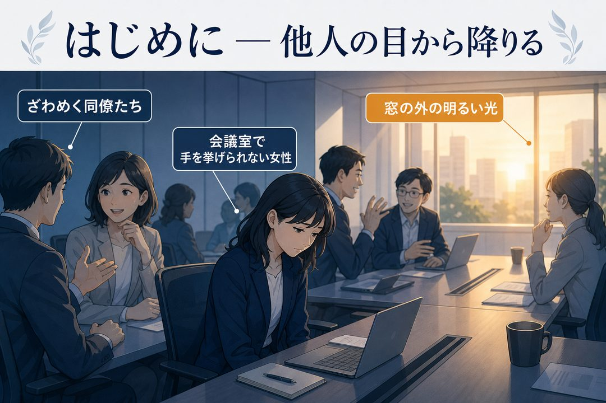
<!-- [HEADER_IMAGE: pattern=illustration | title=はじめに ― 他人の目から降りる | elements=会議室で手を挙げられない女性,ざわめく同僚たち,窓の外の明るい光 | description=深い青とグレーを基調に、うつむいた主人公と、その先にかすかに差すオレンジの光。
暗から明へ向かう本書全体のトーンを示す扉絵] -->
「嫌われるのが怖い」
「変に思われたらどうしよう」
「雰囲気を壊しそうで言い出せない」
この本を手に取ってくださったあなたは、こんな言葉を、心の中で何度もつぶやいてきたのではないでしょうか。
言いたいことがあるのに、言えない。
会議で違う意見を持っていても、場の空気が悪くなりそうで飲み込んでしまう。
休みを取りたいのに、周りが忙しそうだから言い出せない。
スマートフォンを開けば同期の投稿が流れてきて、比べるつもりなんてなかったのに、なぜか気持ちが沈んでいく。
そして家に帰ってから、こう思うのです。
なんで自分はこうなんだろう、と。
まず、はっきりお伝えしたいことがあります。
それは、あなたが弱いからではありません。
人の目が気になるのは、あなたの心が壊れているからでも、性格が後ろ向きだからでもありません。
人は誰かと関わりながら生きています。
関わっている以上、相手がどう思うかは、どうしたって視界に入ってきます。
それは人間として、ごく自然なことです。
問題は、その視界に入ってきたものが、いつの間にか自分の行動を決める基準になってしまうことのほうにあります。
相手がどう思うかを想像する。
ここまでは自然です。
でも、相手がどう思うかを基準に、自分の言葉を選び、自分の休みを決め、自分の人生の進路まで決めてしまう。
そうなったとき、私たちは自分の人生の運転席から、静かに降ろされてしまいます。
この本は、アドラー心理学という考え方をもとに、その運転席に戻るための本です。
ここで、期待してほしくないことを先に書いておきます。
これは、頑張って特別な自分になるための本ではありません。
もっと有能になろう、もっと堂々としよう、もっと自信を持とう。
そういう本ではありません。
むしろ逆です。
この本がお伝えしたいのは、他人の目という高い台の上から、静かに降りる方法です。
降りたところにあるのは、特別な自分ではなく、いつもどおりの自分です。
ただしそこは、他人の採点表がない場所です。
物語の案内役は、二人います。
一人は佐倉みなと。
企画職の会社員で、周りに合わせすぎて疲れています。
もう一人は御堂慧。
喫茶店「灯台」のマスターで、以前は学校で子どもたちの相談を受けていた人です。
御堂さんは答えを教えてくれません。
かわりに、問いを返してきます。
読んでいるあなたも、その問いを一緒に受け取ってみてください。
そしてもう一つ、この先で必ず出てくる話を、ここで予告しておきます。
あなたが今、変えられないと思っている自分の性格。
引っ込み思案だとか、人見知りだとか、気にしすぎだとか。
それは、今日から変えられます。
そんなはずはない、と思われたでしょうか。
私も最初はそう思いました。
その話は第2章で、じっくり扱います。
まずは、みなとの月曜日から始めましょう。
02第1章 すべての悩みは人間関係から始まる
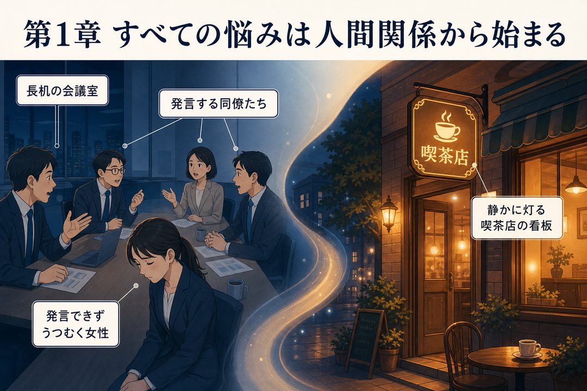
<!-- [HEADER_IMAGE: pattern=illustration | title=第1章 すべての悩みは人間関係から始まる | elements=長机の会議室,発言できずうつむく女性,発言する同僚たち,静かに灯る喫茶店の看板 | description=左半分は青とグレーの会議室、右半分は温かい灯りの喫茶店。
悩みの場面から対話の場面へつながる構図] -->
1-1 みなとの月曜日
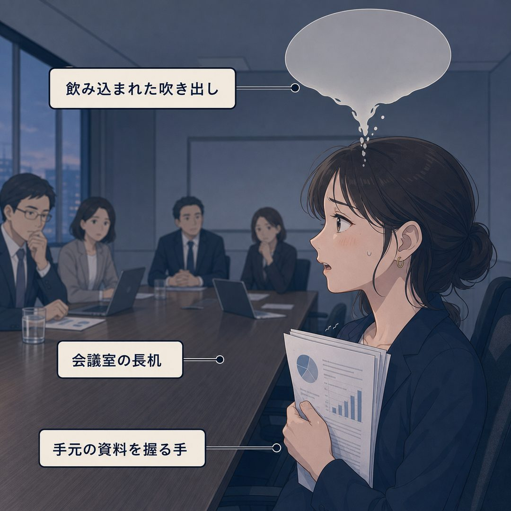
<!-- [INLINE_IMAGE: pattern=illustration | title=言えなかった言葉 | elements=会議室の長机,手元の資料を握る手,飲み込まれた吹き出し | description=会議室で発言しようとして口を開きかけたまま止まる女性。
頭上の吹き出しが灰色にしぼんでいく様子。
青とグレー基調] -->
月曜の午前十時。
会議室の空気は、いつもより少しだけ張っていました。
新しい企画の方向性を決める打ち合わせです。
みなとの手元には、週末に自分で作った資料がありました。
今の案には無理がある。
予定より人手が足りないし、進め方の順番も違う気がする。
そう思って、根拠になる数字まで拾ってきました。
部長が言いました。
「じゃあ、この方向で進めるということで。
何かある人？」
みなとは、資料の端を握りました。
言おう。
今、言おう。
口を開きかけたそのとき、隣の席の先輩が「いいと思います」と言いました。
向かいの席の人がうなずきました。
誰かが「うん、そうですね」と続けました。
みなとの中で、何かがすっと引いていきました。
（……今、違うって言ったら。
この空気、壊れるよね）
（変に思われたらどうしよう。
あの人だけ話が違うって）
みなとが言ったのは、こうでした。
「大丈夫です」
会議は五分早く終わりました。
みんな席を立って、それぞれの仕事に戻っていきます。
誰も、みなとが何かを飲み込んだことに気づいていません。
当然です。
みなとは、何も言わなかったのですから。
自分の席に戻って、みなとはパソコンを開きました。
作った資料のファイルを、そっと閉じました。
（また、言えなかった）
（なんで自分はこうなんだろう）
その日の帰り、みなとはいつもと違う道を歩きました。
まっすぐ帰りたくなかったからです。
駅の裏の細い通りに、小さな看板が灯っていました。
喫茶「灯台」。
古びた木の扉を押すと、コーヒーの匂いがしました。
カウンターの奥から、白髪をきちんと後ろに撫でつけた男性が顔を上げました。
「いらっしゃい。
空いてる席、どこでもどうぞ」
みなとはカウンターの端に座りました。
注文したブレンドが出てくるまでのあいだ、何も言わずにおしぼりをいじっていました。
「今日は、疲れましたか」
マスターが、こちらを見ずに言いました。
豆を挽きながらの、独り言のような声でした。
みなとは、なぜか笑ってしまいました。
「……はい。
仕事は、そんなに大変じゃなかったんですけど」
「大変じゃないのに、疲れた」
「変ですよね」
「いいえ」
マスターは湯を注ぎながら、少しだけ間を置きました。
「そういう疲れが、いちばん深いところに残るんです」
1-2 もし世界に自分ひとりなら、その悩みは残るか
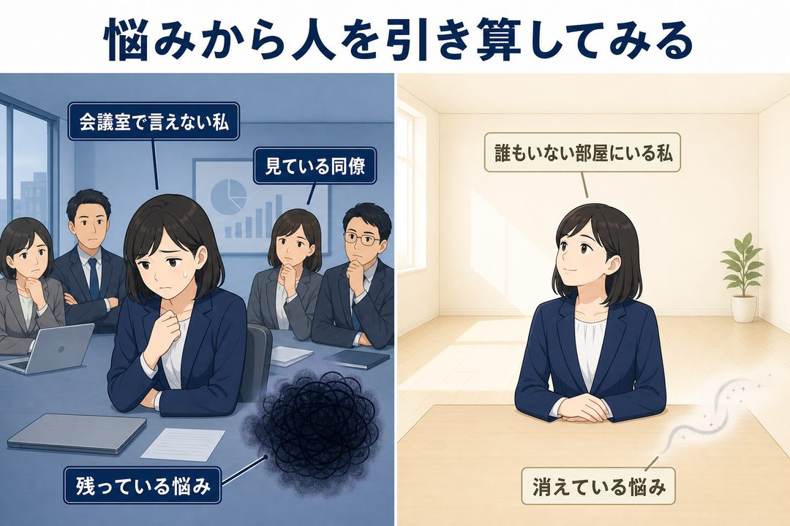
<!-- [INLINE_IMAGE: pattern=before-after | title=悩みから人を引き算してみる | elements=会議室で言えない私,見ている同僚,誰もいない部屋にいる私,残っている悩み,消えている悩み | description=左は他者がいる場面で悩みが濃く描かれ、右は他者がいない場面で悩みが薄れていく対比。
左は青とグレー、右は淡い生成り色] -->
みなとは、コーヒーカップを両手で包みました。
「あの……変な質問してもいいですか」
「どうぞ」
「私、たぶん、能力が足りないんだと思うんです。
会議で自分の意見が言えなくて。
ちゃんとした人なら、言えるじゃないですか。
私はそれができないから、能力の問題かなって」
マスターは、カウンター越しに少しだけ身を乗り出しました。
名札には「御堂」とありました。
「ひとつ、想像してみてくれますか」
「はい」
「もし、この世界にあなたひとりしかいなかったら。
同僚も、部長も、家族も、SNSの向こうの誰も、いない。
そこにあなたひとりが立っている」
「……はい」
「そのとき、今日のその悩みは、残っていますか」
みなとは黙りました。
想像してみます。
誰もいない会議室。
誰もいないオフィス。
誰もいない街。
そこで、自分は何に悩むだろう。
「……残らない、かもしれません」
「どうしてでしょう」
「だって、言えないも何も、聞く人がいないから」
御堂は小さくうなずきました。
それ以上、何も言いませんでした。
みなとは、自分で続きを言ってしまいました。
「あれ。
じゃあ私、能力が足りないんじゃなくて……」
言いかけて、みなとは止まりました。
頭の中でひっくり返るものがありました。
能力が足りないのではなく、悩みの中に、いつも誰かがいる。
言えなかったのは、話す能力がなかったからではありません。
話す相手がいて、その相手にどう思われるかが怖かったからです。
誰もいなければ、能力があるかどうかなんて、そもそも問題になりません。
アドラー心理学には、この見方が土台にあります。
人の悩みは、突きつめると人間関係の悩みだ、という見方です。
これは「人間関係さえ良ければ全部うまくいく」という意味ではありません。
もっと素朴な話です。
私たちが日々かかえる悩みの多くには、材料として他者という部品が混ざっている、ということです。
もちろん、すべての苦しみがそうだと言うつもりはありません。
病気の痛み、大切な人を失った悲しみ、災害に遭った恐怖。
これらを人間関係だけに還元することはできませんし、してはいけません。
ここで扱うのは、あなたが日常の中で「なんで自分はこうなんだろう」とくり返し考えてしまう、あの種類の悩みです。
たとえば「自分は仕事が遅い」という悩み。
誰とも比べていなければ、それはただの作業ペースです。
「遅い」という言葉が生まれるためには、比べる相手が必要です。
たとえば「見た目に自信がない」という悩み。
無人島にひとりで暮らしていて、その悩みは何日もつでしょうか。
たとえば「親の期待に応えられない自分が嫌」という悩み。
ここには最初から、親という他者が入っています。
「じゃあ」とみなとは言いました。
「人と関わるのをやめれば、悩みは消えますか」
御堂は、カップを拭く手を止めました。
「消えるでしょうね。
喜びも一緒に」
「……あ」
「あなたが今日、言いたかった意見。
あれは、誰かに届けたかったんじゃないですか」
みなとは、うなずきました。
そうでした。
言いたかったのです。
届けたかったのです。
誰もいなければ悩まずに済みますが、誰もいなければ、届ける相手もいません。
人間関係は、悩みの原因であると同時に、喜びが生まれる場所でもあります。
だから、答えは「関わりを断つ」ではありません。
関わり方のほうを、変えるのです。
1-3 「みんな」という存在しない多数派
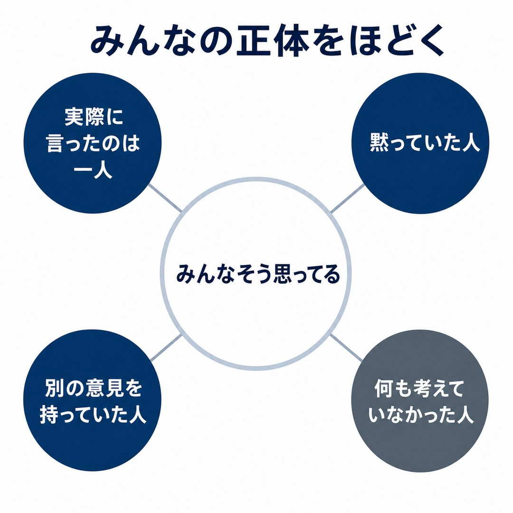
<!-- [INLINE_IMAGE: pattern=radial | title=みんなの正体をほどく | elements=みんなそう思ってる,実際に言ったのは一人,黙っていた人,別の意見を持っていた人,何も考えていなかった人 | description=中心に「みんな」という大きな文字が置かれ、そこから放射状に伸びた先には具体的な個人が数人だけ描かれている。
中心が実体のない輪郭線で描かれているのがポイント] -->
翌週も、みなとは灯台に寄りました。
「あの、まだ引っかかってることがあって」
「どうぞ」
「私、会議で言えなかったとき、こう思ったんです。
みんなが賛成してるのに、私だけ違うことを言ったら、って」
御堂はコーヒーを注ぎながら聞いていました。
「その、みんなというのは」
「みんなは、みんなです」
「何人ですか」
みなとは口を開いて、そのまま止まりました。
「……何人?」
「そのとき賛成の言葉を口に出したのは、何人でしたか」
思い出してみます。
隣の先輩。
向かいの人。
それから、うなずいた人が一人か二人。
会議室には十人以上いたはずです。
「……三人、くらいです」
「では、残りの人たちは」
「……黙ってました」
「その黙っていた人たちは、賛成だったんでしょうか」
わかりません。
わかるはずがありません。
みなとと同じように、何かを飲み込んでいた人がいたかもしれません。
単に興味がなかっただけの人もいたでしょう。
みなとは、自分の口の中で言葉を転がしました。
「じゃあ、私が怖がってたみんなって」
「どこにいたんでしょうね」
職場でよく聞く言い方があります。
「みんなやってるから」「みんなそう思ってるよ」。
この言い方をされると、反論しづらくなります。
目の前にいる一人ではなく、姿の見えない大群を相手にしている気持ちになるからです。
でも、たいていの場合、その大群には実体がありません。
話している本人と、その人が見た数人。
それだけです。
「みんな」という言葉は、少数の意見を大きく見せるための、便利な拡声器なのです。
そしてやっかいなことに、私たちは自分の頭の中でも、この拡声器を使ってしまいます。
誰にも何も言われていないのに、「こんなこと言ったらみんなに変に思われる」と考える。
休みを申請したいだけなのに、「みんな忙しいのに私だけ」と考える。
投稿に反応が少ないだけで、「みんなに興味を持たれていない」と考える。
そのとき私たちが怖がっているのは、実在する誰かではなく、自分の頭の中で膨らんだ影です。
「じゃあ、気にしなければいいってことですか」
みなとがそう言うと、御堂は首を横に振りました。
「気にするな、というのは無理な話です。
人は気になるようにできていますから」
「じゃあ、どうすれば」
「みんな、を、名前に戻してみてはどうでしょう」
「名前に……?」
「今日、あなたが言葉を飲み込んだとき、頭に浮かんでいた顔は誰でしたか」
みなとは少し考えました。
浮かんできたのは、たった一人でした。
以前、会議で発言したときに眉を上げた、あの人の顔。
「……一人でした」
「では、あなたが怖かったのは、みんなではなく、その一人です」
みなとは、思わず息を吐きました。
みんなに嫌われるのが怖い、と思っていました。
でも、ほどいてみると、そこにあったのは一人でした。
一人なら、大群ではありません。
顔と名前のある、ただの人です。
「一人なら、なんか……戦えそうな気がします」
「戦わなくてもいいんですよ」
御堂は、少しだけ笑いました。
「大きさが分かるだけで、だいぶ違います」
1-4 悩みは消すものではなく、扱い方を変えるもの
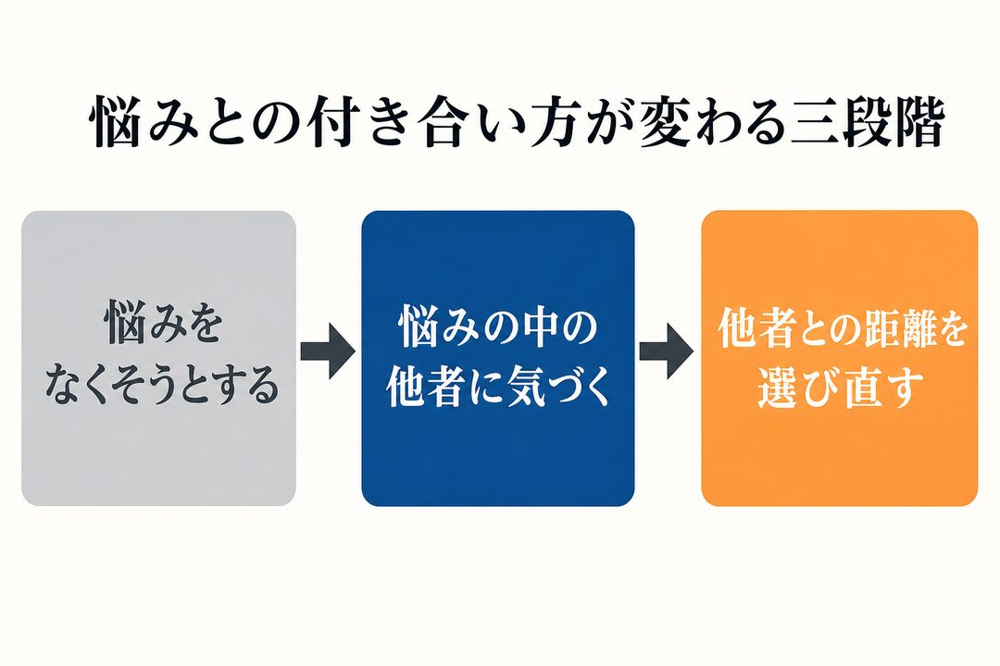
<!-- [INLINE_IMAGE: pattern=flow-horizontal | title=悩みとの付き合い方が変わる三段階 | elements=悩みをなくそうとする,悩みの中の他者に気づく,他者との距離を選び直す | description=左から右への横向きフロー。
左は灰色、中央は青、右は温かいオレンジへと色が変化していく] -->
その夜、帰り道でみなとはひとつ、正直な疑問を持ちました。
翌週、それをそのまま御堂にぶつけました。
「わかったんです。
悩みの中に、いつも誰かがいるって。
みんなは実体がないって。
でも、わかっても、まだ怖いんです。
次の会議でも、たぶん言えません」
御堂はうなずきました。
否定も、励ましもしませんでした。
「そうでしょうね」
「……そこは、大丈夫って言ってほしかったです」
「嘘をつくことになりますから」
みなとは笑ってしまいました。
この人は、こういう人です。
「じゃあ、意味がないってことですか」
「いいえ。
ひとつ、変わったことがあります」
「なんですか」
「あなたは今、自分の悩みの形が見えている。
先週までは、見えていなかった」
先週まで、みなとの悩みは「自分がダメだから」という、輪郭のない霧でした。
今は違います。
会議で言えないのは、能力の問題ではなく、特定の誰かの反応が怖いから。
その誰かは、大群ではなく一人。
ここまで来ると、霧は霧ではなくなります。
形のあるものになります。
ここが、大事なところです。
この本は、悩みをゼロにする方法をお伝えする本ではありません。
人と関わって生きているかぎり、悩みは何度でも生まれます。
誰かに何か言われて落ち込む日も、投稿の反応を気にしてしまう日も、これから先ずっとあります。
それを「なくす」と言ってしまうのは、正直ではありません。
かわりに変えられるのは、悩みの扱い方です。
これまでのみなとは、悩みが来ると、自分を責めていました。
私が弱いから。
私がダメだから。
これは一見、反省しているようで、実は何も動いていません。
自分を責めるという作業は、いくらやっても状況を一ミリも変えないからです。
これからのみなとが試すのは、別のやり方です。
悩みが来たら、まずその中に誰がいるかを見る。
そして、その誰かとの距離を、自分で選び直す。
自分を責めるのをやめて、関係を見る。
たったこれだけの向きの変更が、この本の全部の入口になります。
「じゃあ私、これから何をすればいいですか」
みなとが聞くと、御堂はいつものように、答えを言いませんでした。
「ひとつだけ、聞かせてください」
「はい」
「あなたは、なぜ自分が言えないんだと思っていますか」
「え……それは、そういう性格だから、です。
昔から人見知りで」
言ってから、みなとは気づきました。
御堂が、静かにこちらを見ていることに。
「今のところ、面白いですね」
「え、どこがですか」
御堂はカップを片づけながら、こう言いました。
「その話は、次にいらしたときにしましょう」
性格は、変えられないのでしょうか。
みなとは、その問いを持ち帰ることになりました。
今日からできること
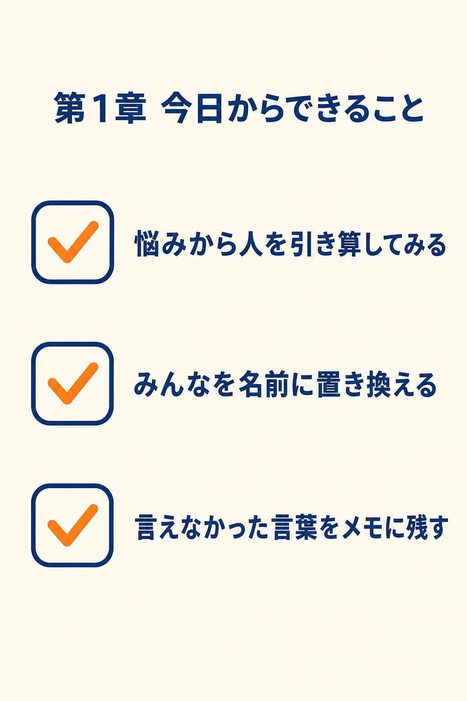
<!-- [INLINE_IMAGE: pattern=list-vertical | title=第1章 今日からできること | elements=悩みから人を引き算してみる,みんなを名前に置き換える,言えなかった言葉をメモに残す | description=縦並びのチェックリスト。
生成り色の背景に、深い青の見出しとオレンジのチェックマーク] -->
第1章でお伝えしたことを、明日から使える形にします。
難しいことは一つもありません。
順番に一つずつでかまいません。
一つめ。
悩みから人を引き算してみる。
今、頭を占めている悩みを、ひとつ思い浮かべてください。
そのうえで、こう自分に聞きます。
もしこの世界に自分ひとりだったら、この悩みは残るだろうか、と。
残らないなら、それは人間関係の悩みです。
あなたの能力の問題ではありません。
ここが分かるだけで、自分を責める材料が一つ減ります。
紙に書く必要はありません。
通勤電車の中で、頭の中でやるだけで十分です。
二つめ。
みんなを名前に置き換える。
「みんなに変に思われる」と考えたとき、そこで止まって、こう聞いてください。
そのみんなとは、誰と誰ですか、と。
頭の中の「みんな」が、一人か数人の具体的な顔に置き換わることがあります。
出てきた名前を、実際に数えてみてください。
名前が何人出てきてもかまいません。
大事なのは、実際にそう言った人と、そう思われているだろうと自分が想像している人を、分けて数えることです。
「みんな」が「あの人」に縮んだ瞬間、怖さの大きさが変わります。
名前が一つも出てこないときは、その怖さの相手は、まだこの世界のどこにも存在していません。
三つめ。
言えなかった言葉を、その日のうちにメモに残す。
言えなかった言葉を、そのまま捨てないでください。
会議で飲み込んだ意見、断れなかった頼まれごと、返せなかった一言。
スマートフォンのメモでも、手帳の隅でもかまいません。
ひと言だけ書いておきます。
これは反省のためではありません。
あとで使うためです。
言えなかった言葉には、あなたが本当に大事にしているものが必ず入っています。
それを集めておくと、いつか言える日が来たときに、何を言えばいいかで迷わずに済みます。
みなとがこの先、会議で口を開く日が来るとしたら、そのとき話す内容は、この日のメモの中にあります。
まずは、この三つだけです。
次の章では、みなとが最後に口にした言葉を扱います。
そういう性格だから、という、あの一言です。
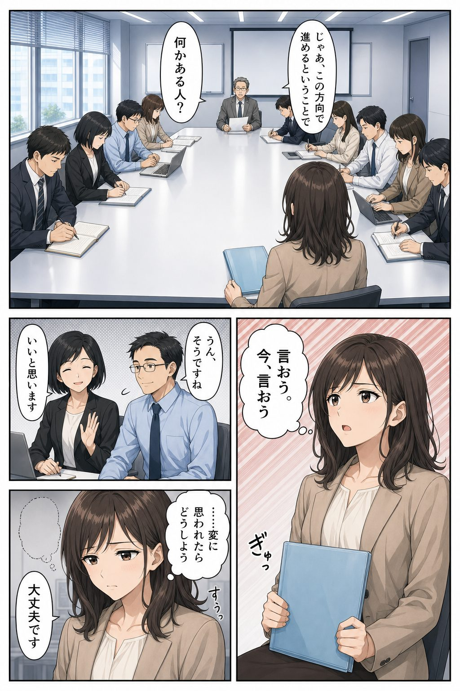
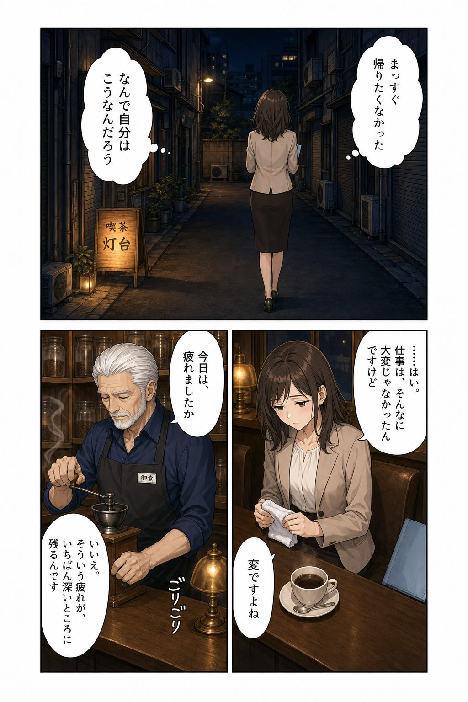
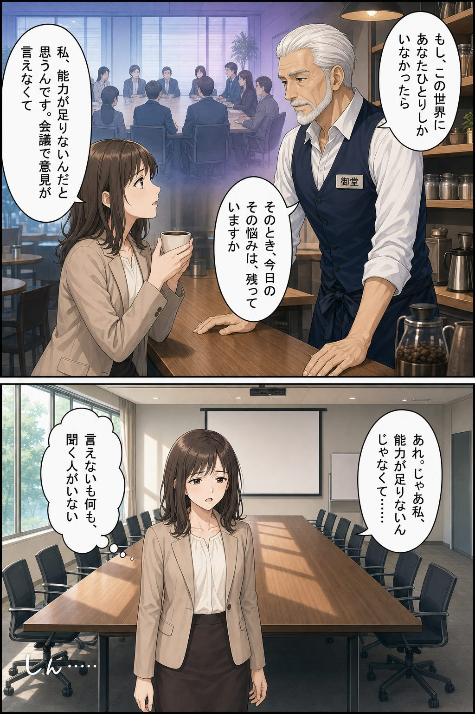
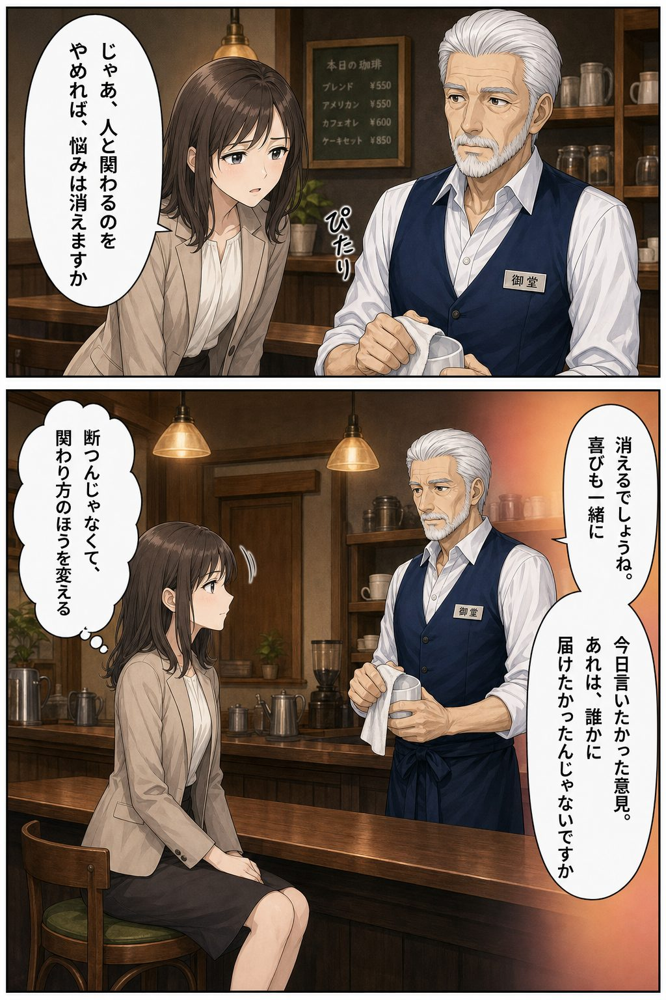
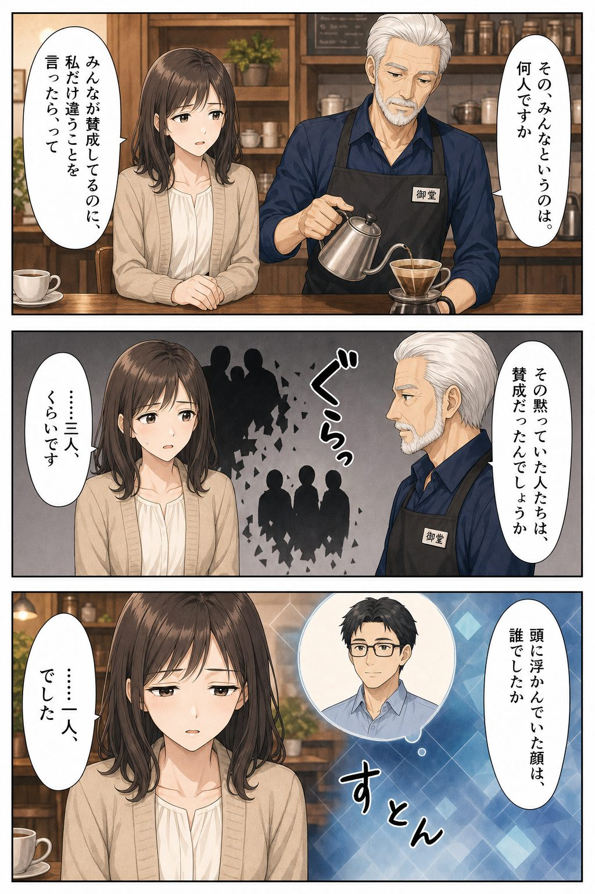
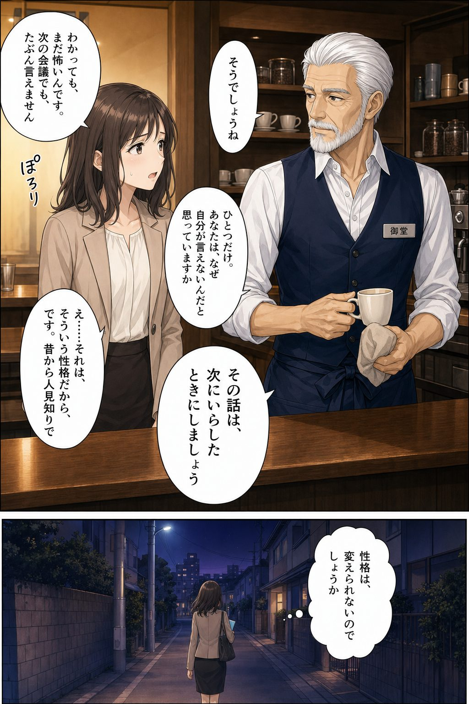
03第2章 性格は変えられる ― 過去のせいにしない
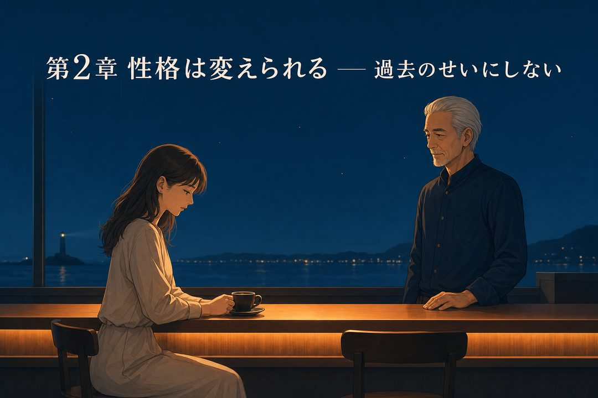
<!-- [HEADER_IMAGE: pattern=illustration | title=第2章 性格は変えられる ― 過去のせいにしない | elements=喫茶店「灯台」のカウンター席、夜、佐倉みなと（34・女・ダークブラウンのセミロング・ベージュの服）がコーヒーカップに視線を落としている、その向かいでマスターの御堂慧（62・男・白髪オールバック・紺のシャツ）が静かに立っている、窓の外は青い夜、カウンターの一点だけが温かいオレンジの灯りで照らされている | color=深い青(#2C5F8D)を基調に、灯りだけ温かいオレンジ(#F0913A) | style=落ち着いたインフォグラフィック調イラスト] -->
第1章で、みなとさんは悩みの正体が自分の能力ではなく、人間関係の中にあることを知りました。
けれどその帰り道、彼女はもう一つの言葉に足を取られます。
長いあいだ、彼女を守ってくれていた言葉です。
2-1 「私は人見知りだから」と言った瞬間
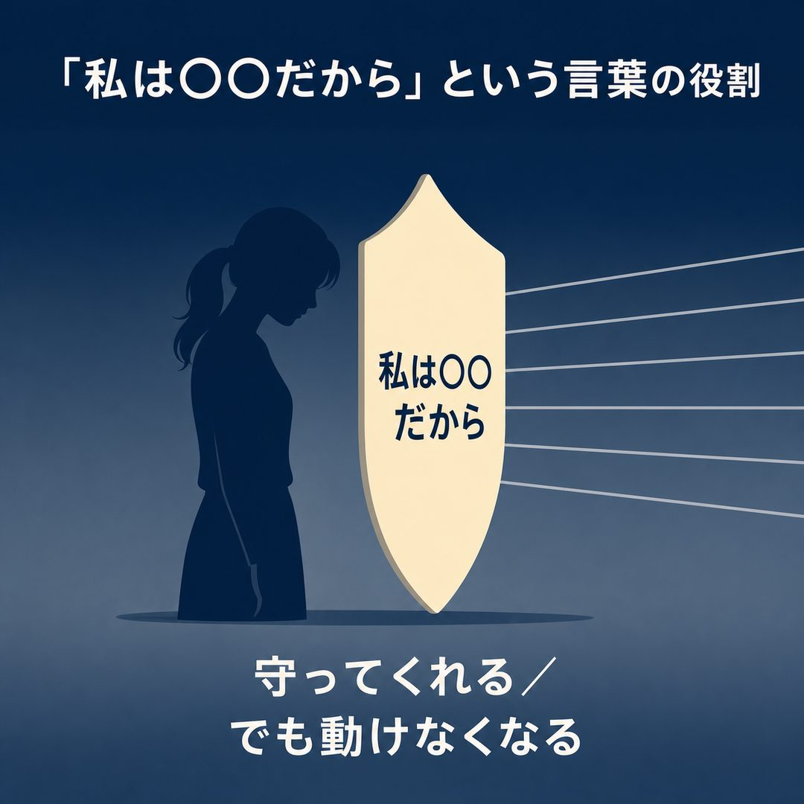
喫茶店「灯台」のカウンター。
閉店間際の店内には、みなとさんと御堂さんだけが残っていました。
「先生。
この前の会議、やっぱり何も言えませんでした」
「そうでしたか」
「私、昔から人見知りなんです。
小学校の発表で言葉が出なくなって、笑われたことがあって。
だから、たぶん一生このままなんだと思います」
御堂さんはカップを拭く手を止めて、少しだけ考えてから言いました。
「ひとつだけ聞いてもいいですか。
いま、その言葉を口に出したとき、少し楽になりませんでしたか」
「……え」
みなとさんは、何秒か黙りました。
「……なりました。
ちょっとだけ。
説明がついたっていうか」
「それは悪いことではありません。
誰にでもあることです」御堂さんは言いました。
「ただ、覚えておくといい。
説明のつく苦しさは、説明のつかない苦しさよりずっと抱えやすいんです」
<!-- [INLINE_IMAGE: pattern=illustration | title=「私は〇〇だから」という言葉の役割 | elements=中央にうつむいた女性のシルエット、その手前に「私は〇〇だから」と書かれた薄い盾のような板、盾の向こう側から矢印ではなく細い視線の線が届いているが盾で止まっている、盾の下に小さく「守ってくれる／でも動けなくなる」の対の文字 | color=深い青(#2C5F8D)とグレー(#9E9E9E)、盾だけ生成り(#F5F0E6) | style=シンプルな概念図] -->
「私は〇〇だから」。
この言い方を、私たちはたくさん持っています。
私は気が弱いから。
私は不器用だから。
私はもう年だから。
相談サイトをのぞけば、「なんで自分はこうなんだ」「この性格とは一生付き合っていくしかないのでしょうか」という声が、毎日のように書き込まれています。
これらの言葉は嘘ではありません。
実感としては本当です。
ただ、この言葉には副作用があります。
口にした瞬間、そこから先を考えなくて済むようになりがちなのです。
「アドラーという人の考え方では、性格にあたるものを、生まれつき固定された性質とは見ません」と御堂さんは言いました。
「本書では生き方の型と呼びましょう。
長い時間をかけてあなたが選び、使い慣れてきた道具のようなもの、という意味です」
「道具、ですか」
「ええ。
だから、持ち替えることができる。
ただしね、みなとさん。
その道具はよく手に馴染んでいます。
簡単ではありません」
2-2 矢印を逆にする
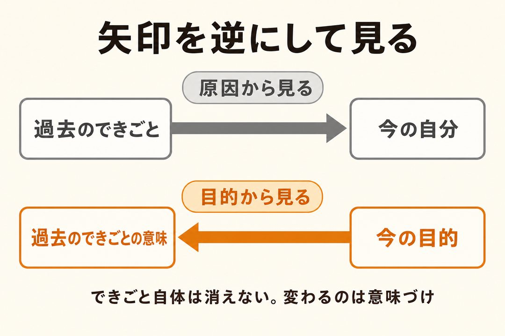
「でも先生、順番としては、原因は過去にありますよね」みなとさんは食い下がりました。
「笑われたから、怖くなった。
過去が今を作っている。
そうじゃないですか」
「多くの人がそう考えます」御堂さんはうなずきました。
「過去から今へ、一本の矢印が伸びている。
これを原因から見る考え方と呼びましょう。
とても自然な見方です。
アドラーは、そこにもう一本、逆向きの矢印を引きました」
「逆向き」
<!-- [INLINE_IMAGE: pattern=flow-horizontal | title=矢印を逆にして見る | elements=上段に「原因から見る」＝左から右へ「過去のできごと」→「今の自分」の太い矢印、下段に「目的から見る」＝右から左へ「今の目的」→「過去のできごとの意味」の矢印、中央に小さく「できごと自体は消えない。
変わるのは意味づけ」の注記 | color=上段はグレー(#9E9E9E)、下段は温かいオレンジ(#F0913A)、背景は生成り(#F5F0E6) | style=横並びの対比フロー図・矢印2本] -->
「今のあなたには、目的があります。
たとえば、あの会議では発言しないでいたい、という目的です。
その目的から見ると、笑われた記憶はとても役に立ちます。
だから、数えきれない過去の記憶の中から、その一つを選んで、手元の見えるところに置いている」
みなとさんはカップを両手で包んだまま、しばらく動きませんでした。
「……それ、けっこうきついです」
「きついですよね」御堂さんはあっさり認めました。
「だから急がなくていい。
それより先に、はっきりさせておきたいことがあります。
これは、過去は関係ないと言っているのではありません」
ここは、この考え方でいちばん誤解されるところです。
実際に起きたことは消えません。
傷ついたのは本当です。
誰かに「そんなことは無かったことにしなさい」と言う権利は、誰にもありません。
変えられるのは、出来事そのものではなく、その出来事にいまの自分が与えている意味のほうです。
「同じように人前で笑われた経験をした人が、二人いるとします」と御堂さんは続けました。
「一人は人前が怖くなった。
もう一人は、同じ思いを誰かにさせたくないと言って、司会を引き受けるようになった。
出来事は同じです。
結論が違うのはなぜでしょう」
「……間に、何かが挟まっているから」
「そう。
その人がいま、どう生きたいかが挟まっています」
「じゃあ私は、あの記憶を、使っている」
「どう思いますか」
御堂さんは答えを言いませんでした。
ただ、コーヒーをもう一杯淹れてくれました。
2-3 変えられないのではなく、変えたくない
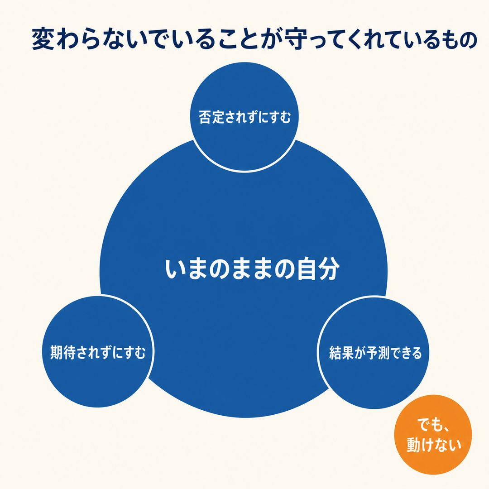
「先生。
どうすれば変われますか」
「順番が逆かもしれません」御堂さんは静かに言いました。
「変わり方がわからないのではなく、変わらないほうを選び続けている、という可能性です」
みなとさんの表情が、はっきり変わりました。
「……それって、私が悪いってことですか。
ちょっと冷たくないですか、その言い方」
「冷たく聞こえたなら、私の言い方が足りませんでした」御堂さんはすぐに頭を下げました。
「責めているのではありません。
むしろ逆です。
変わらないでいることには、ちゃんとした理由がある。
私はその理由のほうを話したい」
<!-- [INLINE_IMAGE: pattern=scale-circles | title=変わらないでいることが守ってくれているもの | elements=中央に大きな円「いまのままの自分」、その周りに中くらいの円が3つ「否定されずにすむ」「期待されずにすむ」「結果が予測できる」、外側に小さな円が1つだけ「でも、動けない」、円の大きさで安心の大きさを表す | color=中央と中円は落ち着いた青(#2C5F8D)、外側の小円だけ温かいオレンジ(#F0913A) | style=大小の同心的な円で構成した概念図] -->
いまの自分は、不便かもしれません。
でも、慣れています。
人見知りの自分でいるかぎり、会議で発言して否定されることはありません。
期待されることもありません。
失敗もしません。
明日がどうなるか、だいたい予測がつきます。
これは苦しさと引き換えに手に入れた、たしかな安全です。
変わるというのは、その屋根を自分の手で外すことです。
怖くて当たり前です。
「だから、変わりたくないのではありません」と御堂さんは言いました。
「変わることが怖いのです。
それは弱さではなく、ごく自然な反応です」
「……怖い、です。
正直」
「それが言葉にできたなら、もう半分は済んでいます」
そのうえで、と御堂さんは続けました。
性格が変えられないのではなく、変えないという選択を、私たちは毎日更新しているのだと。
今日も更新した。
昨日も更新した。
だとすれば、更新をやめる日を選ぶこともできる。
「でも先生、明日から別人になれと言われても」
「言いません。
別人になる必要はまったくない」御堂さんは笑いました。
「一段でいい。
たとえば明日の会議で、意見を言うのではなく、確認したいことがあります、と前置きだけ言ってみる。
それだけです。
中身は無くていい」
「前置きだけ、ですか」
「ええ。
前置きだけです。
それができた自分を、あなたはもう人見知りだからと片づけられなくなる」
2-4 ただし、この考え方が効かない場面があります
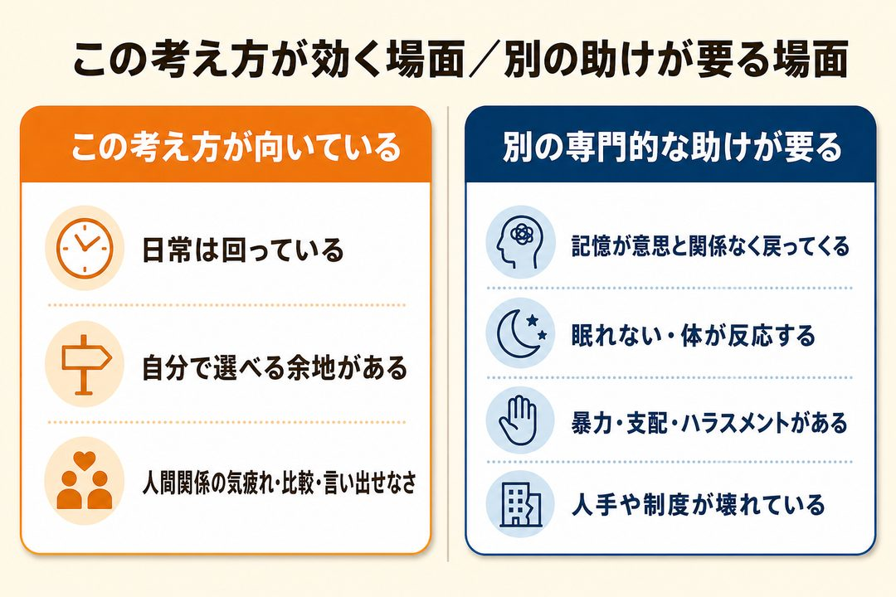
「ここまで話しておいて、こう言うのもなんですがね」
御堂さんはカウンターに肘をつきました。
元スクールカウンセラーの顔でした。
「この考え方には、効かない場面があります。
そこを黙っている本は、信用しないほうがいい」
<!-- [INLINE_IMAGE: pattern=comparison-table | title=この考え方が効く場面／別の助けが要る場面 | elements=左側「この考え方が向いている」＝日常は回っている／自分で選べる余地がある／人間関係の気疲れ・比較・言い出せなさ、右側「別の専門的な助けが要る」＝記憶が意思と関係なく戻ってくる／眠れない・体が反応する／暴力・支配・ハラスメントがある／人手や制度が壊れている、中央に区切り線 | color=左は温かいオレンジ(#F0913A)、右は深い青(#2C5F8D)、背景は生成り(#F5F0E6) | style=2列の対比図・表組みではなくカード状の並置] -->
一つめ。
重い出来事の記憶が、本人の意思と関係なく戻ってくるときです。
思い出したくないのに戻ってくる。
体が勝手に反応する。
眠れない。
日常が回らない。
これは考え方の工夫でどうにかする話ではありません。
医療や専門的な支援が届く領域です。
専門家に会うことは、逃げでも負けでもありません。
二つめ。
相手の側に問題があるときです。
暴力、支配、ハラスメント。
ここで「それはあなたの目的です」と言うのは、加害の肩代わりをさせることになります。
この場合、その場から離れることが最も正しい選択であることがあります。
三つめ。
仕組みの問題を、心の持ちようにすり替えないこと。
人手が足りない職場で潰れかけている人に必要なのは、考え方の転換ではなく人員です。
「この考え方は万能薬ではありません」と御堂さんは言いました。
「心と体がまだ動く範囲にいる人が、自分の手綱を取り戻すための道具です。
効かない場面で無理に使うと、人を傷つけます」
みなとさんは、ゆっくり息を吐きました。
「……そこまで言ってもらえると、かえって信じられます」
今日からできること
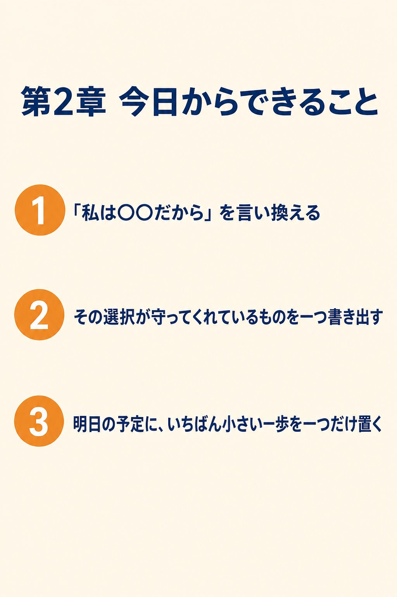
<!-- [INLINE_IMAGE: pattern=list-vertical | title=第2章 今日からできること | elements=縦に3項目、1「私は〇〇だから、を言い換える」、2「その選択が守ってくれているものを一つ書き出す」、3「明日の予定に、いちばん小さい一歩を一つだけ置く」、各項目の左に番号入りの丸 | color=温かいオレンジ(#F0913A)の番号丸、文字は深い青(#2C5F8D)、背景は生成り(#F5F0E6) | style=縦並びのリスト図解] -->
一つめ。
言い換えてみる。
「私は〇〇だから」と言いかけたら、いったん止めて、「私はいま、〇〇でいることを選んでいる」と頭の中で置き換えます。
声に出さなくてかまいません。
しっくりこなくてもかまいません。
違和感が残れば十分です。
二つめ。
守られているものを書き出す。
その選択によって、自分が何から守られているかを、一つだけ紙に書きます。
否定されずにすむ。
期待されずにすむ。
がっかりされずにすむ。
責めるためではなく、確かめるために書きます。
三つめ。
いちばん小さい一歩を決める。
明日の予定の中から、一つだけ選びます。
会議で意見を言う、ではありません。
「確認したいことがあります」と前置きだけ言う。
あいさつを自分から一回する。
その程度で十分です。
大きすぎる一歩は、怖さに勝てません。
その夜、みなとさんは帰り道でふと、後輩の高梨陸くんのことを思い出しました。
いつも自信満々で、堂々としていて、うらやましい後輩。
（あの子は、私とは違う。……本当にそうかな）
第3章では、その高梨くんが空回りします。
自信のあるように見える人ほど、実は何を抱えているのか。
次は劣等感の話です。
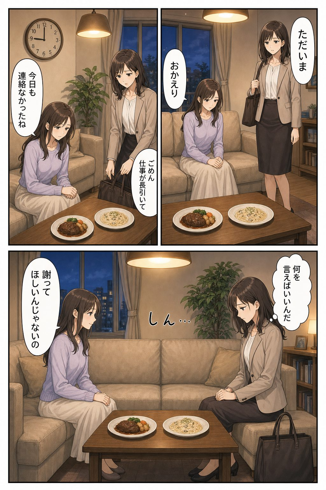
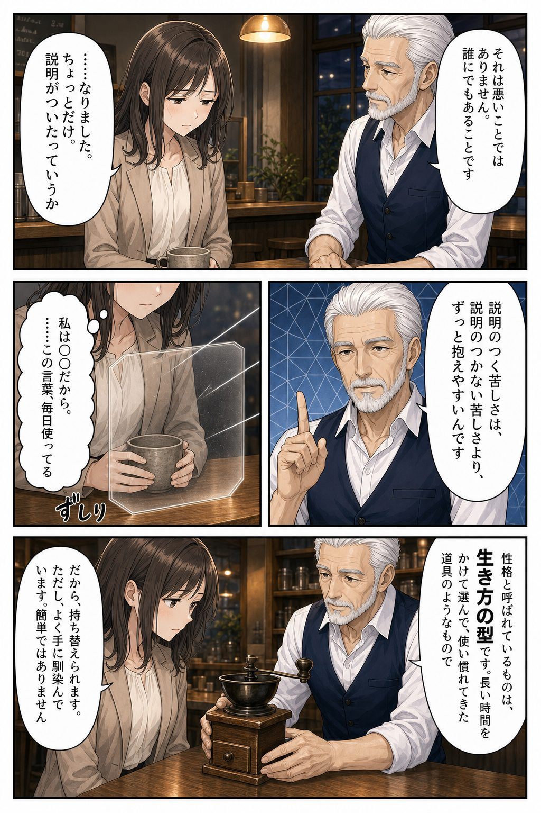
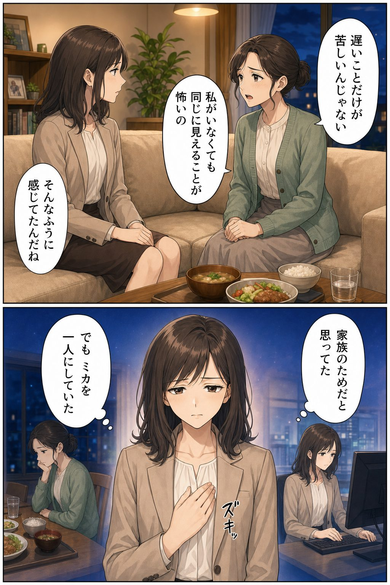
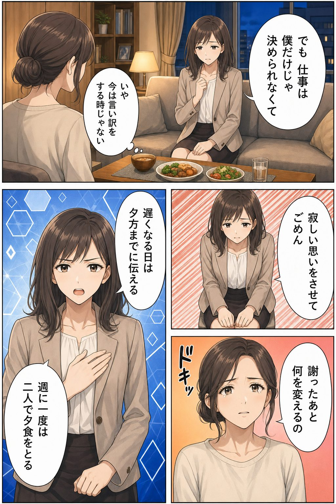
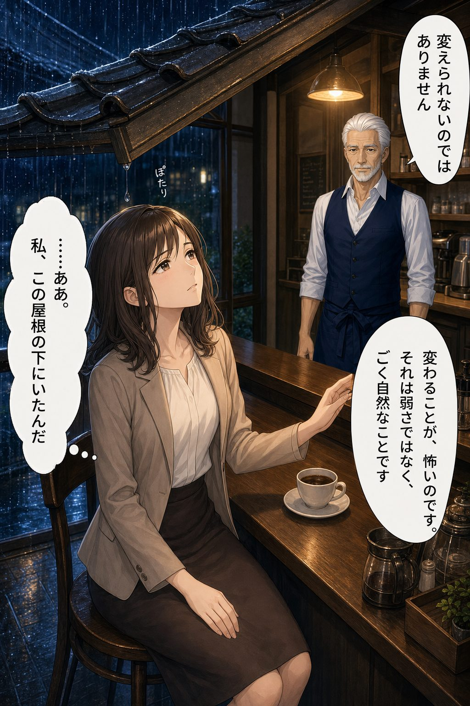
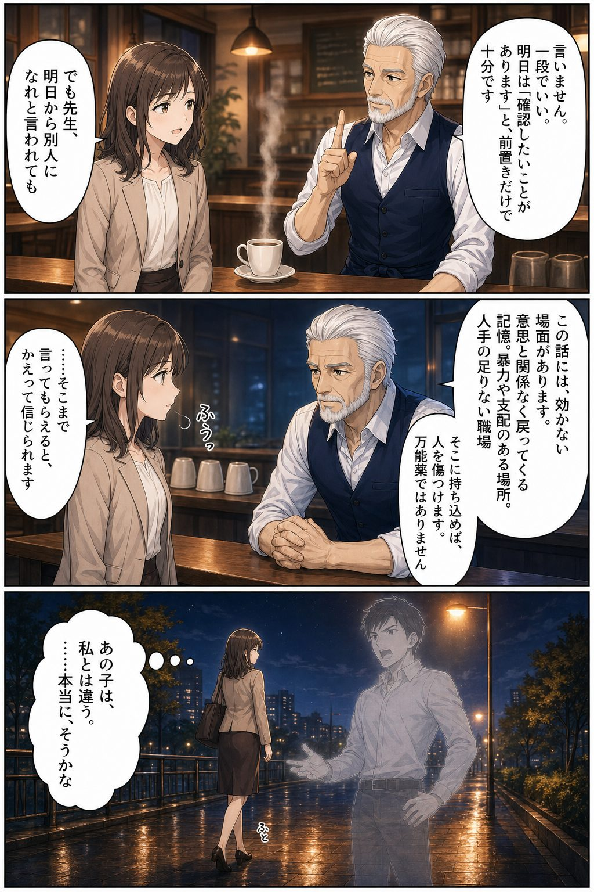
04第3章 劣等感は敵じゃない
<!-- [HEADER_IMAGE: pattern=illustration | title=第3章 劣等感は敵じゃない | elements=自信満々に振る舞う後輩,うつむく先輩,喫茶店のカウンター,湯気の立つカップ | description=胸を張って大声で話す若手社員と、それを離れた席から見つめる女性。
二人の影が同じ形に重なって落ちている。
深い青を基調に、カウンターの灯りだけが温かいオレンジ] -->
前の章で、みなとは「私は人見知りだから」という言い訳を手放しました。
けれど、言い訳を手放したあとに残るものがあります。
それが劣等感です。
「なんで自分はこうなんだ」「今のままではダメだ」。
そう思うたびに気が休まらない。
この感情とは一生付き合っていくしかないのだろうか。
そう感じている読者は、きっと少なくありません。
この章では、その問いに答えます。
アドラー心理学の結論から言うと、劣等感は消さなくていいのです。
むしろ消してはいけない。
危険なのは劣等感そのものではなく、その使い道のほうなのです。
3-1 自信満々に見える人ほど
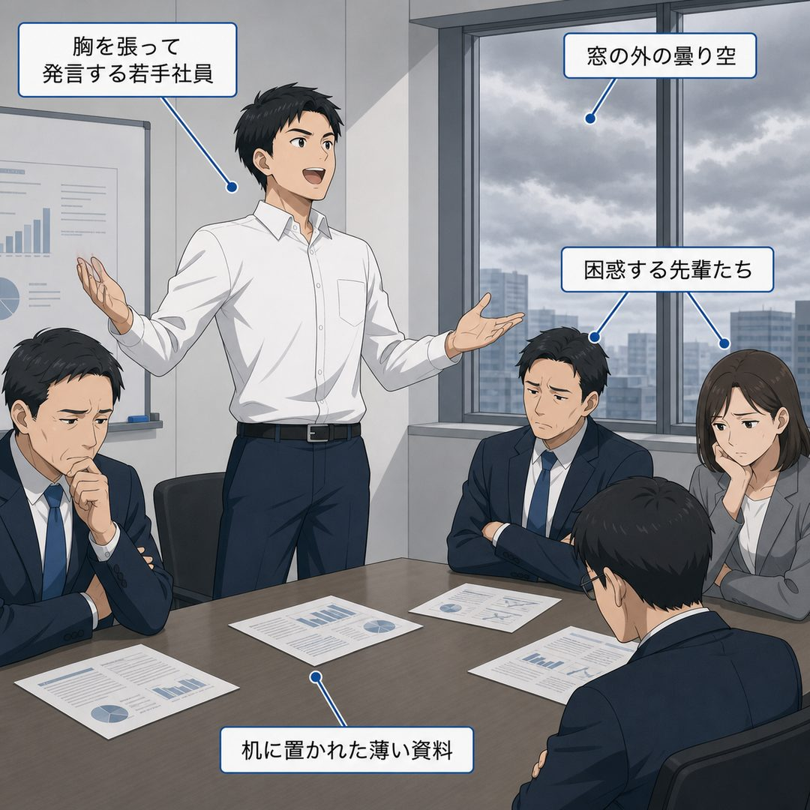
その日、みなとの部署に異変が起きました。
<!-- [INLINE_IMAGE: pattern=illustration | title=会議室での空回り | elements=胸を張って発言する若手社員,困惑する先輩たち,机に置かれた薄い資料,窓の外の曇り空 | description=会議室で立ち上がって大きな身振りで話す男性社員。
周囲は目を合わせず沈黙している。
灰色と青のトーン] -->
後輩の高梨陸くんが、企画会議で先輩の案を真っ向から否定したのです。
「正直、その進め方は古いと思います。
前の部署ではもっと効率よくやってました」
会議室の空気が固まりました。
陸くんは胸を張ったまま、自分の案を説明し続けます。
けれど彼が用意した資料は数枚だけで、肝心の根拠が抜けていました。
先輩に穏やかにそこを指摘されると、陸くんの声は急に大きくなりました。
「いや、それは僕の担当じゃないですし」
その夜、みなとは喫茶店「灯台」のカウンターで、御堂さんにその話をしました。
「正直、苦手なんです。
ああいう自信のある人って。
私とは違う人種というか」
御堂さんはカップを拭きながら、ゆっくり顔を上げました。
「みなとさん。
その人、本当に自信があるように見えた？」
「え……見えました。
むしろ、ありすぎるくらい」
「じゃあ、もうひとつ。
自信のある人は、指摘されたときに声を大きくするだろうか」
みなとは黙りました。
言われてみれば、あのとき陸くんの手はテーブルの上でずっと動いていた気がします。
ペンを握ったり離したり。
落ち着かない指先。
「……声が大きくなったのは、痛いところを突かれたから、ですか」
「どうだろうね。
でも、覚えておくといいことがある」
御堂さんはカップを棚に戻して言いました。
「大きく見せようとする人は、小さく見られるのが怖いことが多い。
堂々としている人は、そもそも見せる必要をあまり感じない」
3-2 劣等感は成長の燃料
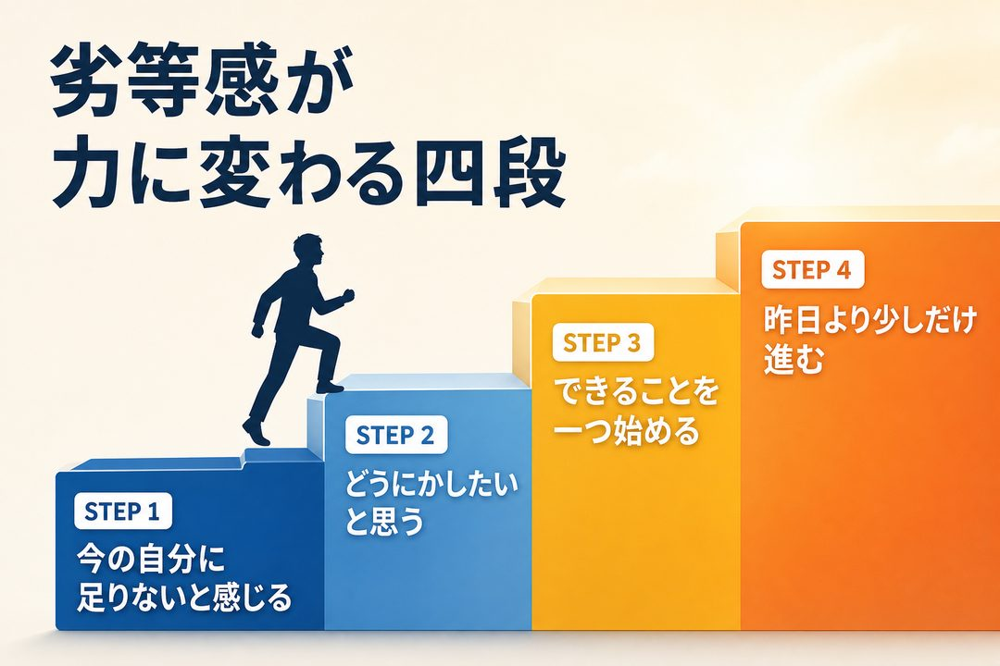
<!-- [INLINE_IMAGE: pattern=stairs | title=劣等感が力に変わる四段 | elements=今の自分に足りないと感じる,どうにかしたいと思う,できることを一つ始める,昨日より少しだけ進む | description=四段の階段を一段ずつ上っていく人物のシルエット。
段ごとに色が青からオレンジへ変化する成長の図解] -->
「先に言っておくと」と御堂さんは続けました。
「劣等感そのものは、悪いものじゃない。
それを持っていること自体は、異常でも何でもないんだ」
「え。
私、劣等感の塊ですけど……それでいいんですか」
「いいんだよ。
だって劣等感は、今より良くなりたいと思っているから生まれる感情だからね」
みなとは意味がつかめず、首をかしげました。
「考えてごらん。
もし自分が今のままで完璧だと思っているなら、足りないなんて感じようがない。
足りないと感じるということは、心のどこかに理想の自分がいるということだ。
理想があるから、現在地との差が見える。
その差の感覚が劣等感だよ」
「じゃあ……劣等感って、伸びしろを測る物差しみたいなものですか」
「いい言い方だね」
御堂さんは、ある人の体験談を教えてくれました。
その人は幼いころ、舌が短くて発音がうまく伝わらなかったそうです。
「自分の言うことは人に伝わらない」と感じ、人前で目立たないよう振る舞うようになりました。
小学校に入っても字が読めず、宿題ができないみじめさを抱えていた。
けれどある日、絵本を一人で読み切れたことに気づきます。
そこから彼は「学童保育にある本を全部読む」と決め、最終的には辞書まで読み通してしまったといいます。
「読めないという劣等感が、読み続ける力になった。
これがいちばん健全な使い方だよ」
「劣等感を、燃料にしたんですね」
「そう。
劣等感は、消す対象ではなく、燃やす燃料だ。
問題は、この燃料が別の方向に使われるときなんだ」
3-3 「どうせ」と言った瞬間に、それは言い訳になる
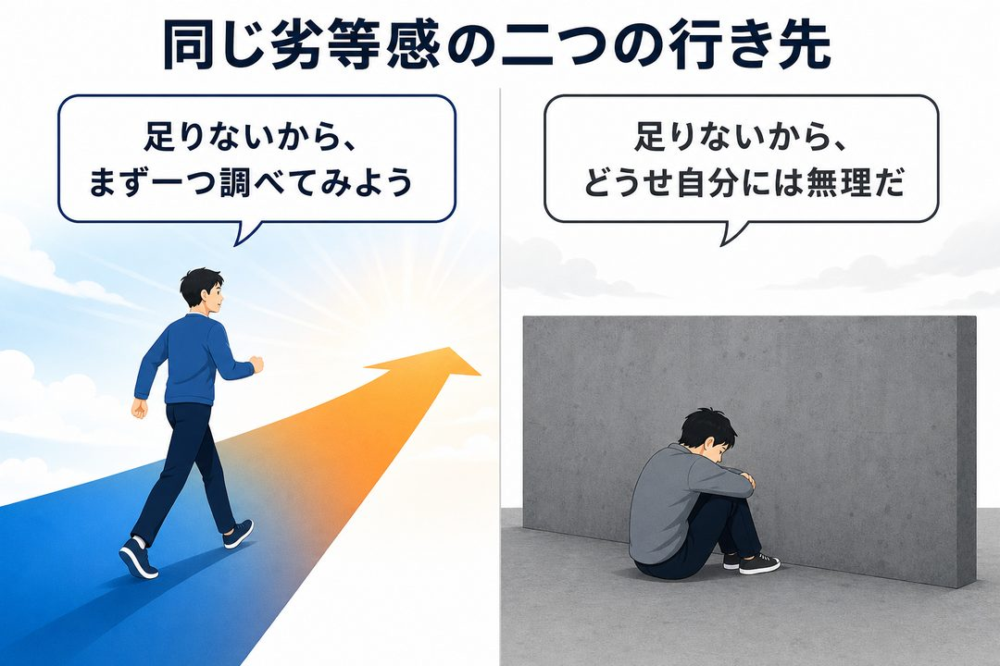
<!-- [INLINE_IMAGE: pattern=before-after | title=同じ劣等感の二つの行き先 | elements=足りないから、まず一つ調べてみよう,足りないから、どうせ自分には無理だ | description=左右対比の図解。
左は青からオレンジへ伸びる矢印と歩き出す人物、右は灰色の壁の前で座り込む人物。
上部に同じ形の吹き出しが一つずつ] -->
「別の方向、というと？」
「たとえばね」と御堂さんは指を一本立てました。
「どうせ自分は、と言った瞬間だよ。
どうせ学歴がないから。
どうせ口下手だから。
どうせ年齢が。
どうせ家庭があるから」
みなとの心臓が小さく跳ねました。
「……私、それ、毎日言ってます」
「多くの人が言っているよ。
この、劣等感を行動しない理由として使い始めた状態を、アドラー心理学では劣等コンプレックスと呼ぶんだ。
難しく聞こえるけど、中身はとても単純でね」
「単純、ですか」
「言い訳のことだよ。
足りないという感覚を、やらない口実にすり替えた状態。
それだけだ」
みなとは、先週飲み込んだ言葉を思い出しました。
企画会議で言いかけて、やめた提案。
あのとき自分は心の中でこう言ったのです。
どうせ私は専門知識がないから、と。
「でも御堂さん。
それって本当のことじゃないですか。
私、本当に知識がないんです」
「うん。
そこが大事なところでね」
御堂さんは静かにうなずきました。
「事実は事実でいい。
知識が足りないのは、直せばいいだけの話だ。
でも、だから提案しないという結論はどこから来たんだろうね」
みなとは答えられませんでした。
知識が足りないことと、提案しないこと。
この二つは、本当はつながっていません。
つないだのは自分です。
しかも、つないだほうが楽だったからつないだ。
提案しなければ、否定されることもない。
「気づいたかい。
言い訳というのはね、責める道具じゃなくて、自分を守る屋根なんだ。
だから雨の日ほど、しっかり手放せなくなる」
3-4 克服したら、今度は威張ってしまう
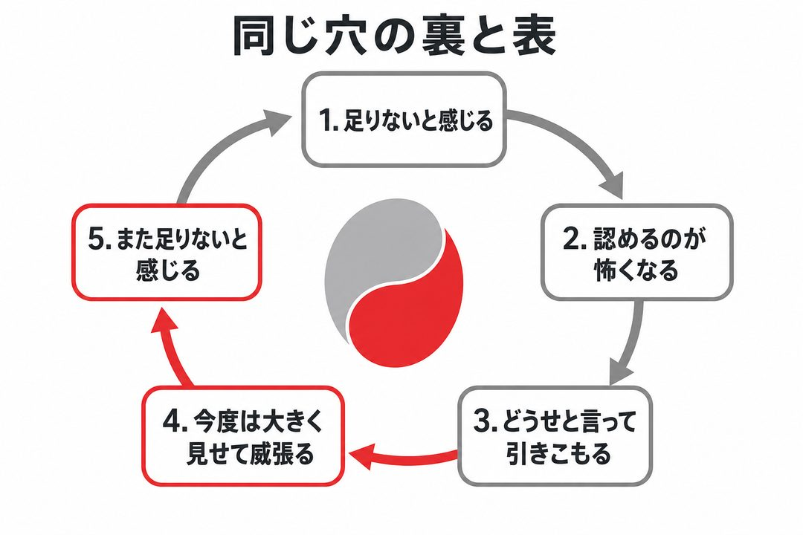
<!-- [INLINE_IMAGE: pattern=cycle | title=同じ穴の裏と表 | elements=足りないと感じる,認めるのが怖くなる,どうせと言って引きこもる,今度は大きく見せて威張る,また足りないと感じる | description=五つの円が輪になって循環する図解。
上半分は灰色の引きこもり側、下半分は赤い威張り側。
中心に同じ一つの小さな影] -->
「そして、ここからが本題だよ」
御堂さんはカウンターに肘をつきました。
「言い訳をしてうずくまるのが、劣等感のこじれ方の片面。
じつはもう一つ、まったく逆に見える出方があるんだ」
「逆、ですか」
「さっきの、本を読み切った人の話には続きがあってね。
彼は学業で人より先に行けるようになった。
ところがそのあと、今度はスポーツが得意な同級生を見下すようになってしまったそうだ」
みなとは、思わずカップから手を離しました。
「劣等感を克服したのに、ですか」
「克服した、というより、優位に立つことで痛みを消そうとしたんだね。
この、自分を実際より大きく見せて安心しようとする状態を、優越コンプレックスと呼ぶことがある。
これも噛み砕くと簡単だ。
弱さを隠すために、強そうな服を着てしまうことだよ」
「……あ」
みなとの頭に、あの会議室の光景が浮かびました。
前の部署ではもっと効率よくやってました。
それは僕の担当じゃないですし。
大きくなった声。
落ち着かない指先。
「陸くん……もしかして、怖かったんでしょうか」
「本人にしか分からないよ。
でも、こうは言える。
引きこもるのも、威張るのも、同じ穴の裏と表だ。
どちらも足りない自分を認めたくないから起きている。
片方は隠れて認めない。
もう片方は大きく見せて認めない。
向きが違うだけで、やっていることは同じなんだ」
みなとは黙って自分の手のひらを見ました。
苦手だと思っていた後輩。
自分とは違う人種だと思っていた相手。
けれど彼がやっていたのは、自分が毎日やっていることの、裏返しだったのかもしれない。
私は「どうせ」と言って黙る。
彼は「僕なら」と言って大きくなる。
どちらも、怖いのは同じ。
「御堂さん。
じゃあ私、この劣等感と一生付き合っていくしかないんでしょうか」
御堂さんは少し笑いました。
「一生付き合っていくよ。
ただし、敵としてじゃなく、同行者としてね」
「同行者……」
「劣等感を消そうとするから苦しいんだ。
消えないものを消そうとすれば、隠すか威張るかになりやすい。
だから消さない。
比べる相手を、他人から昨日の自分に変えるだけでいい」
その言葉に、みなとは小さく息を吐きました。
自分が足りないことは、たぶんこれからも変わりません。
でも足りないと感じることそのものは、ダメな証拠ではなかった。
むしろ、前に進みたいと思っている証拠だった。
翌日の午後、みなとは給湯室で陸くんとすれ違いました。
彼は資料を抱えたまま、いつもの大きな声を出しませんでした。
「高梨くん。
昨日の企画、切り口は面白かったと思う」
陸くんが、ぱっと顔を上げました。
一瞬だけ、彼の目が二十五歳の若さそのままに見えました。
「……え。
あ、はい。
ありがとうございます」
短いやりとりでした。
それでもみなとは、廊下を歩きながら気づきました。
今のは、他人を励ましたのではありません。
同じ穴にいた自分に、声をかけただけだったのです。
今日からできること
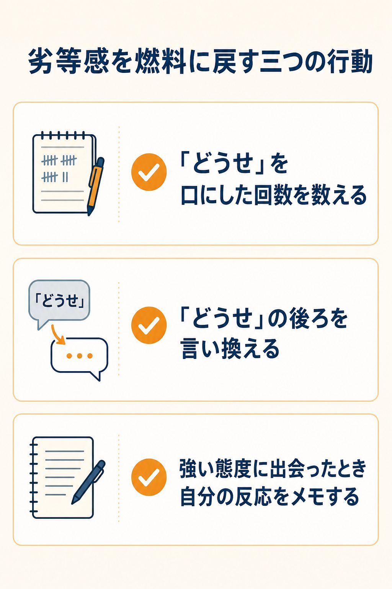
<!-- [INLINE_IMAGE: pattern=list-vertical | title=劣等感を燃料に戻す三つの行動 | elements=どうせを口にした回数を数える,どうせの後ろを言い換える,強い態度に出会ったとき自分の反応をメモする | description=縦three段のチェックリスト図解。
各項目に小さなアイコン、生成りの背景に深い青の文字とオレンジのチェックマーク] -->
1. 「どうせ」を口にした回数を、今日一日だけ数える
直そうとしなくて構いません。
数えるだけです。
どうせ自分は、どうせ言っても、どうせ今さら。
心の中で言った分も含めます。
夜に指を折って思い出すと、多くの人が自分の口ぐせの多さに驚きます。
気づくことが、手放すことの前段階です。
2. 「どうせ」の後ろを、事実と結論に切り分ける
たとえば「どうせ知識がないから提案できない」なら、事実は「知識が足りない」、結論は「提案しない」。
この二つを紙の上で分けて書き、間を線でつないでみてください。
多くの場合、そのつながりに根拠はありません。
足りないことは、やらない理由にはならないとわかります。
3. 強い態度に出会ったら、自分の反応をメモする
職場で強く出る人、話を遮る人、実績を大きく語る人に出会ったら、相手の内面を決めつけるのはやめておきます。
かわりに見るのは自分のほうです。
その言葉を聞いて自分がどれだけ萎縮したかを一行、そのすぐ下に相手が実際に何を言ったかを事実だけ一行、分けて書いてみてください。
萎縮の大きさと、発言の中身が、実は釣り合っていないことによく気づきます。
そして次の日曜日、みなとのスマートフォンが鳴りました。
画面に表示されたのは、母の名前でした。
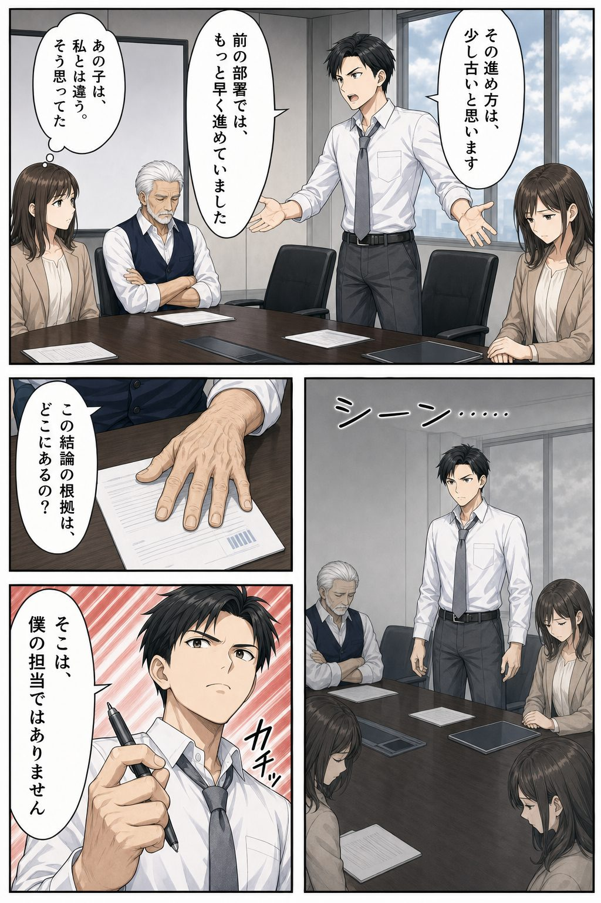
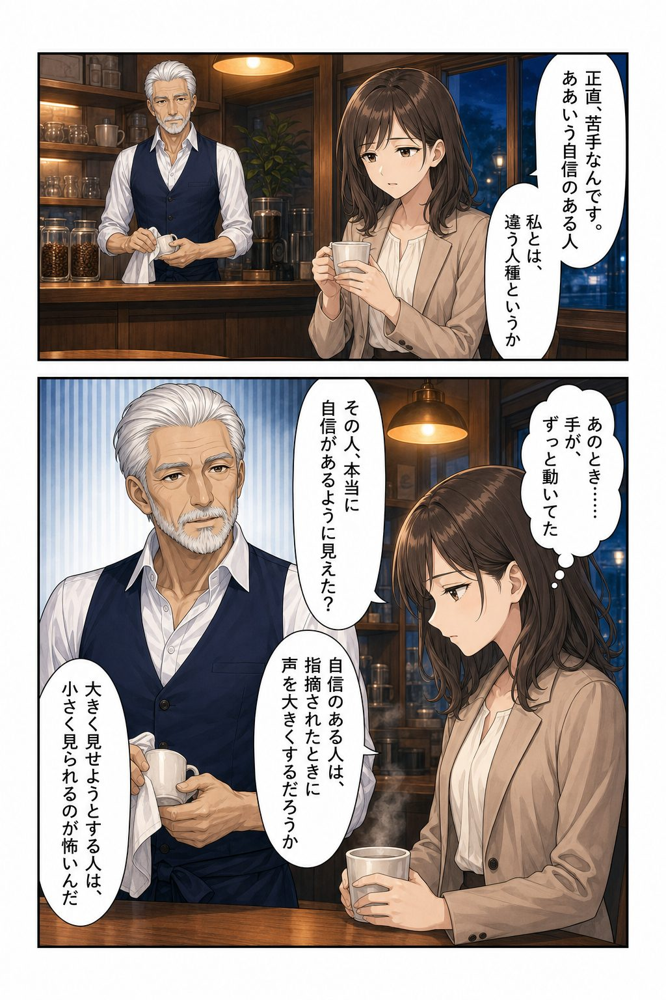
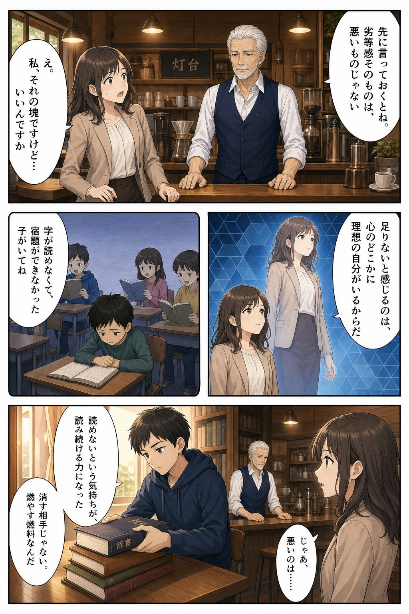
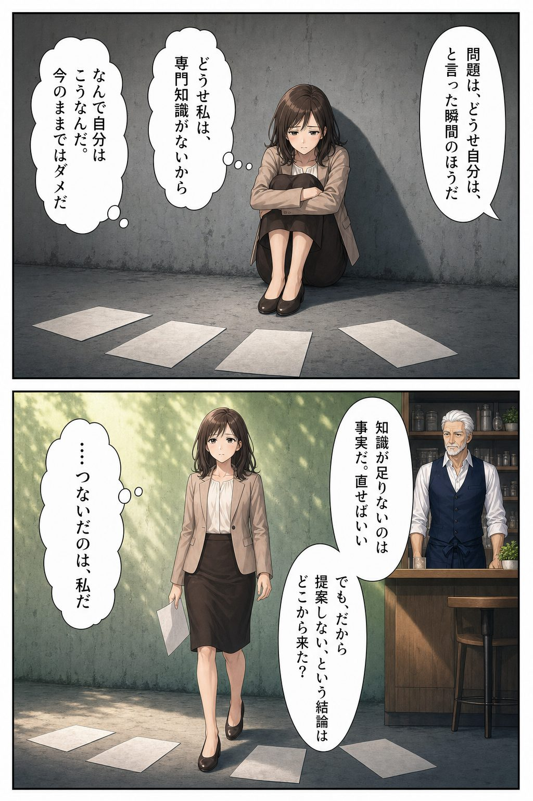
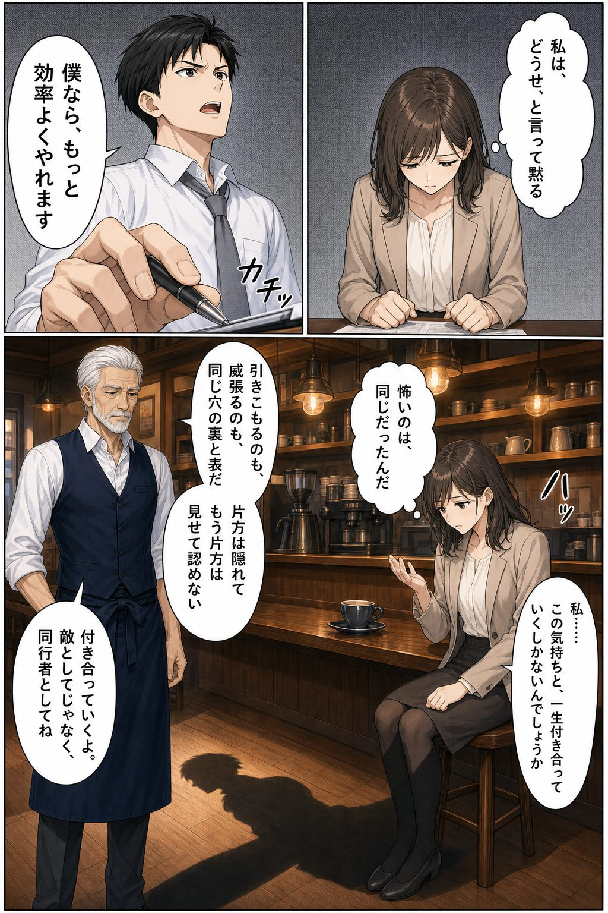
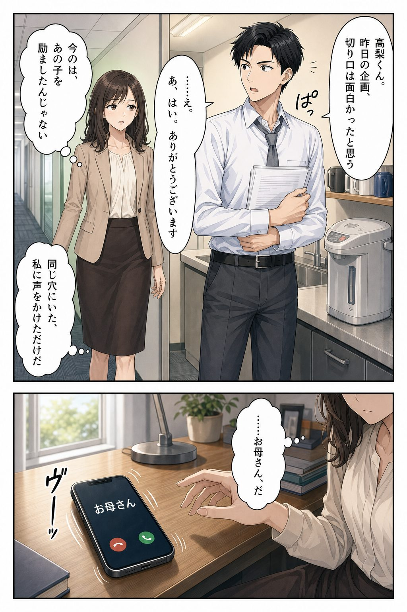
05第4章 他人の期待から降りる
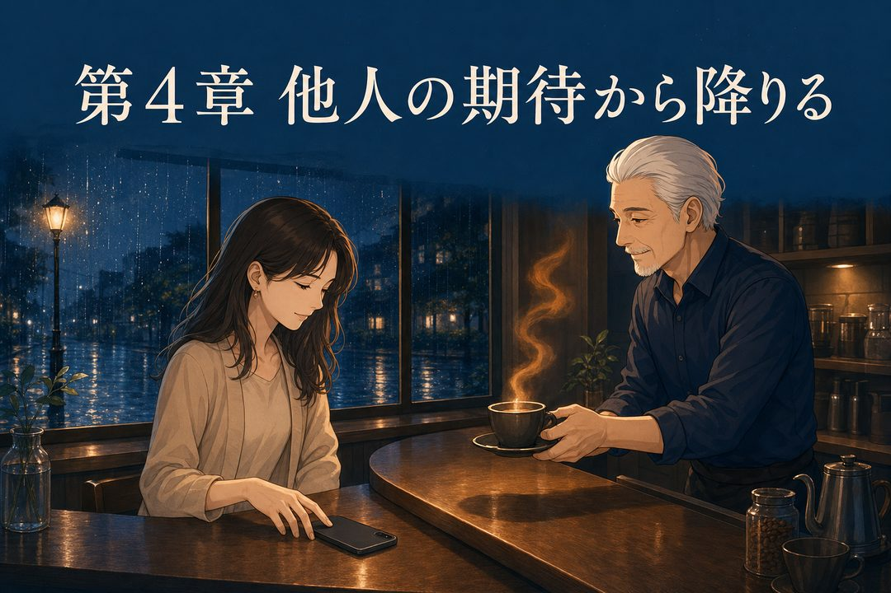
<!-- [HEADER_IMAGE: pattern=illustration; title=他人の期待から降りる; scene=夜の喫茶店「灯台」のカウンター。
佐倉みなとがスマートフォンを裏返して置き、御堂慧がコーヒーを差し出している。
窓の外は雨上がりの街灯; mood=静かな内省から小さな希望へ; colors=深い青(#2C5F8D)ベース、カップの湯気に温かいオレンジ(#F0913A); elements=カウンター, 裏返したスマートフォン, コーヒーカップ, 窓の外の街灯] -->
前の章で、みなとは自分の中の劣等感を認めました。
けれど、認めたところで消えないものがあります。
それは、誰かの期待という重さです。
職場でも、家庭でも、SNSでも、わたしたちは「こうしてほしい」という声に囲まれて生きています。
その声のすべてに応えようとすると、どこかで必ず息が切れます。
この章で扱うのは、その重さを下ろすための線の引き方です。
ただし、あらかじめお伝えしておきます。
この線は、相手を切り捨てるための線ではありません。
ここを取り違えると、この考え方はまるごと有害なものに変わってしまいます。
だからこの章は、本書でいちばん丁寧に書きます。
4-1 母からの電話 ― 「あなたのために言ってるのよ」
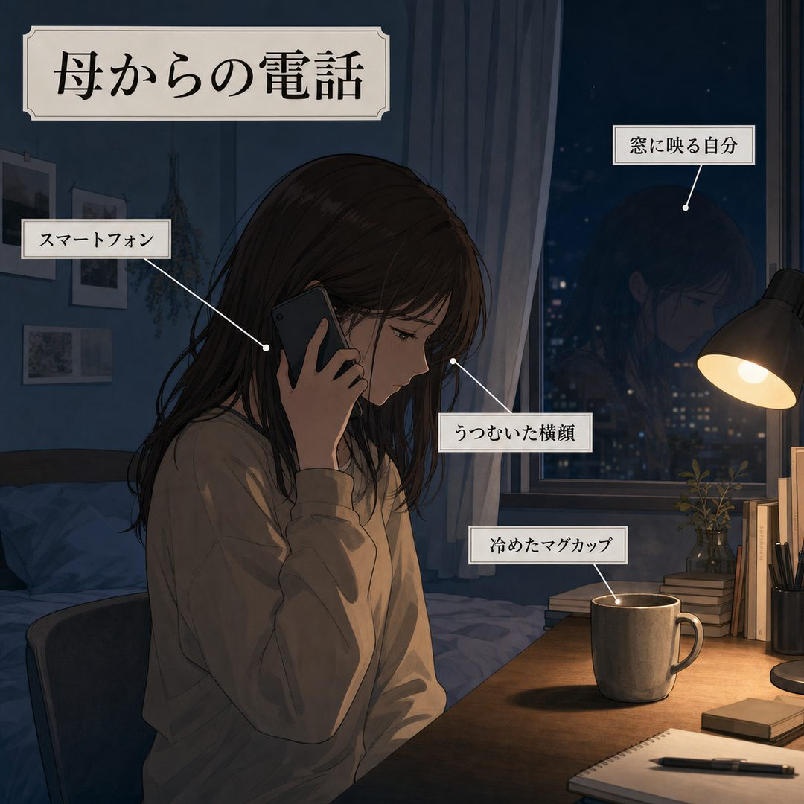
<!-- [INLINE_IMAGE: pattern=illustration; title=母からの電話; scene=夜の自室でみなとがスマートフォンを耳に当てて肩を落としている。
画面外から母・佐倉久子の声。
机の上に手つかずのマグカップ; mood=息が詰まる、罪悪感; colors=くすんだ青とグレー、机のライトだけ暖色; elements=スマートフォン, うつむいた横顔, 冷めたマグカップ, 窓に映る自分] -->
金曜の夜、みなとのスマートフォンが鳴りました。
母の久子からでした。
「みなと、あなた今の会社でずっとやっていくつもり？ お母さん心配なのよ。
同級生の子はもう二人目が生まれたって。
あなたのために言ってるのよ」
みなとは「うん」「そうだね」と相づちを打ちながら、胸のあたりが石を詰めたように重くなるのを感じていました。
電話を切ったあと、部屋の静けさがやけに大きく聞こえました。
翌日、喫茶店「灯台」で、みなとは御堂にこぼしました。
「母は悪気がないんです。
本当に、わたしを思って言ってる。
それがわかるから、よけいにしんどくて。
いい子でいなきゃいけない、迷惑をかけちゃいけないって、子どものころからずっとそうでした」
御堂は、カップを拭く手を止めずに聞いていました。
「親の期待に応えられない自分が嫌になるんです。
応えたくないわけじゃないんですよ。
ただ、応えても応えても終わらなくて」
「みなとさん」と御堂は言いました。
「ひとつだけ聞いていいですか。
お母さんが心配しているその人生を、最後に生きるのは、誰でしょうね」
みなとは、答えられませんでした。
答えは明らかなのに、口に出すことが、母を裏切るように思えたからです。
4-2 「その結果を最終的に引き受けるのは誰か」
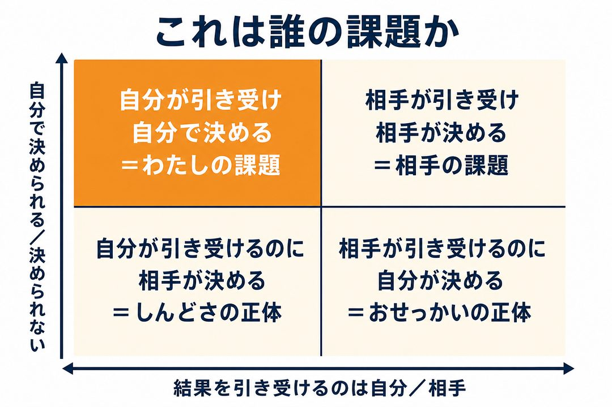
<!-- [INLINE_IMAGE: pattern=matrix; title=これは誰の課題か; axis_x=結果を引き受けるのは自分／相手; axis_y=自分で決められる／決められない; cells=自分が引き受け自分で決める＝わたしの課題, 相手が引き受け相手が決める＝相手の課題, 自分が引き受けるのに相手が決める＝しんどさの正体, 相手が引き受けるのに自分が決める＝おせっかいの正体; colors=深い青(#2C5F8D)と生成り(#F5F0E6)、自分の課題の枠だけオレンジ(#F0913A)] -->
次に会ったとき、御堂はみなとに一枚の紙を渡しました。
真ん中に一本、縦線が引いてあるだけの紙です。
「線の引き方は、たったひとつの問いで決まります。
その結果を最終的に引き受けるのは誰か。
それだけです」
みなとは考えました。
転職するかどうか。
結婚するかどうか。
その決断の結果を、日々の生活として引き受けるのは自分です。
母ではありません。
「じゃあ……わたしの課題、ですね」
「では、お母さんが心配するかどうかは？」
「それは……母が決めていることです」
「そう。
あなたがどんなに完璧な人生を送っても、心配する人は心配します。
相手がどう感じるかは、あなたには決められません。
決められないものを背負うから、終わらないんです」
みなとは、はっとしました。
自分がずっとやろうとしていたのは、母の不安を自分の手で消す仕事だったのです。
それは、どれだけ頑張っても達成できない仕事でした。
「わたし、無理なことを引き受けてたんですね」
「無理なことを引き受けている人は、たいてい優しい人ですよ」と御堂は言いました。
「だから責める話ではないんです」
4-3 課題の分離は、見捨てることではない
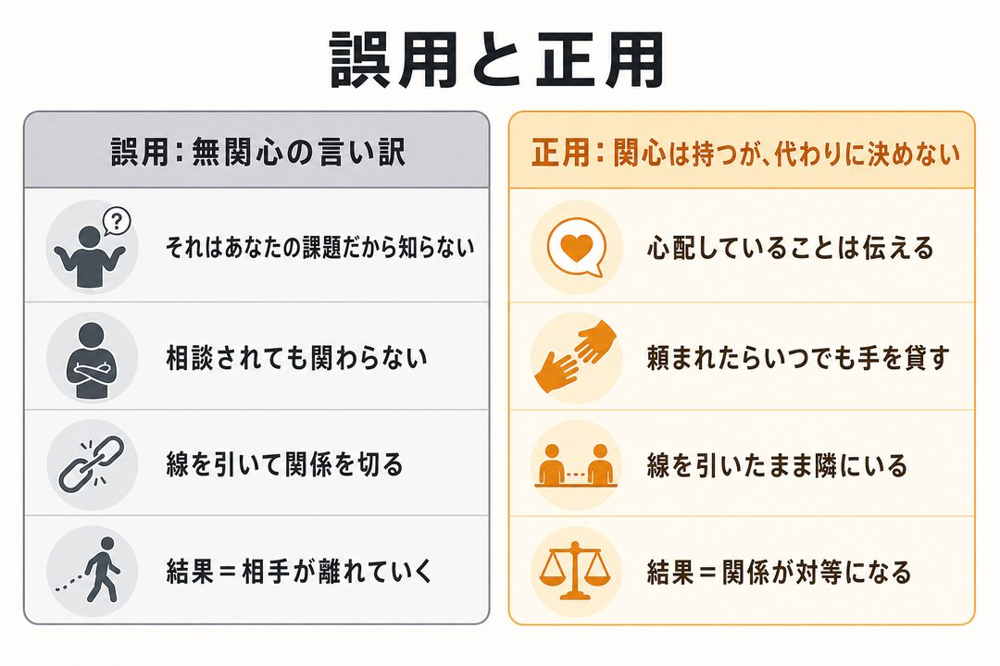
<!-- [INLINE_IMAGE: pattern=comparison-table; title=誤用と正用; left_title=誤用：無関心の言い訳; left_items=それはあなたの課題だから知らない, 相談されても関わらない, line=線を引いて関係を切る, 結果=相手が離れていく; right_title=正用：関心は持つが、代わりに決めない; right_items=心配していることは伝える, 頼まれたらいつでも手を貸す, line=線を引いたまま隣にいる, 結果=関係が対等になる; colors=左はグレー(#9E9E9E)の冷たいトーン、右は温かいオレンジ(#F0913A)] -->
ここが、この本でいちばん伝えたいところです。
課題の分離という考え方は、いま世の中で、いちばん多く誤用されています。
ネットで見かけるのは、こんな使われ方です。
「それはあなたの課題ですよね」「他人がどうなろうと自分には関係ない」。
悩んでいる人に線を引いて、そのまま立ち去る。
これを「分離」と呼んでしまう。
これは、まったくの逆です。
「もし線を引くことが立ち去ることなら」と御堂は言いました。
「わたしはあなたに、この考え方を教えていません。
線を引くことは、相手を大切に思わないことではありません」
誤用と正用の違いは、線を引いたあとに、どこに立っているかで決まります。
誤用は、線を引いて背を向けます。
「知らない」「関係ない」と言って、関心そのものを手放します。
これは分離ではなく、ただの放棄です。
批判する人が「冷たい」「見捨てるぞという脅しだ」と言うのは、この使われ方を見ているからで、その批判はまったく正しいのです。
正用は、線を引いて、その線のこちら側に立ったまま、相手を見ています。
手は出さない。
でも、目は離さない。
「心配している」と伝えることはします。
頼まれたら、いつでも手を貸します。
ただ、相手の人生の決定権を奪わない。
それだけです。
みなとは言いました。
「母を大事に思う気持ちは、そのままでいいんですか」
「そのままでいいんです。
むしろ、そのままでなければ意味がありません。
分離は、関係を切る技術ではなくて、関係を長持ちさせる技術なんですよ。
踏み込みすぎた関係は、どちらかが壊れて終わりますから」
4-4 SNSの「いいね」は、誰の課題か
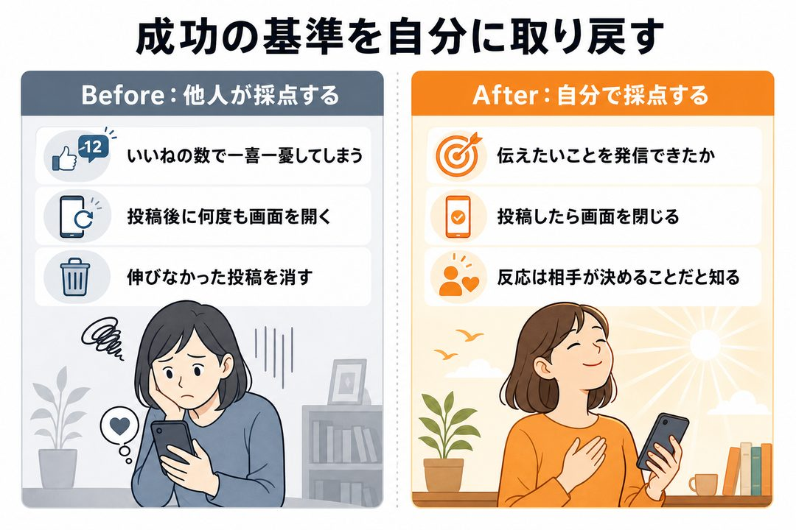
<!-- [INLINE_IMAGE: pattern=before-after; title=成功の基準を自分に取り戻す; before_title=Before：他人が採点する; before_items=いいねの数で一喜一憂してしまう, 投稿後に何度も画面を開く, 伸びなかった投稿を消す; after_title=After：自分で採点する; after_items=伝えたいことを発信できたか, 投稿したら画面を閉じる, 反応は相手が決めることだと知る; colors=BeforeはグレーとくすんだブルーAfterは温かいオレンジ(#F0913A)] -->
同じ線は、SNSにも引けます。
みなとには癖がありました。
投稿したあと、何度もアプリを開いてしまうのです。
数字が伸びていれば安心し、伸びていなければ、書いた自分まで否定された気がしてくる。
「いいねの数で一喜一憂してしまうんです。
もうSNSに疲れました」
御堂は聞きました。
「投稿するかどうかを決めたのは、誰ですか」
「わたしです」
「では、それに反応するかどうかを決めるのは？」
「……見た人ですね」
線は、そこにあります。
書くところまでが自分の課題で、押されるかどうかは相手の課題です。
ところがわたしたちは、相手の課題である数字を、自分の通信簿として受け取ってしまう。
これでは、毎日知らない人に採点されに行っているようなものです。
そこで、成功の基準を入れ替えます。
伸びたかどうかではなく、伝えたいことを発信できたかどうかを、自分の合格ラインにするのです。
これなら、投稿を書き終えた時点で、その日の合格は自分の手で決まります。
みなとはその夜、はじめて投稿したあとにアプリを閉じました。
三十分後、また開きたくなりました。
でも、開きませんでした。
それだけのことが、驚くほど静かでした。
4-5 「自分だけ実践したら、浮くのでは？」
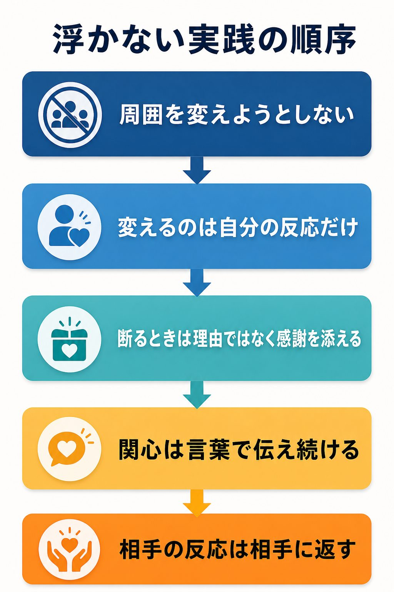
<!-- [INLINE_IMAGE: pattern=flow-vertical; title=浮かない実践の順序; steps=1 周囲を変えようとしない, 2 変えるのは自分の反応だけ, 3 断るときは理由ではなく感謝を添える, 4 関心は言葉で伝え続ける, 5 相手の反応は相手に返す; colors=上は深い青(#2C5F8D)から下へ温かいオレンジ(#F0913A)へのグラデーション] -->
ここまで聞いて、みなとは正直に言いました。
「でも先生。
わたしだけこんな考え方をしたら、浮きませんか。
まわりはみんな、察して合わせるのが当たり前の人たちです。
急に線を引き出したら、変わったねって距離を置かれそうで」
これは、この考え方に向けられる批判の中でいちばん多いものです。
自分だけ実践しても、周囲は前提を共有していないのだから、人間関係がぎくしゃくするだけではないか。
何かのセミナーに行ったのかと言われるのが落ちではないか、と。
御堂はうなずきました。
「その心配は当たっています。
実際、宣言してやると浮きます」
「やっぱり」
「だから、宣言しないんです」
課題の分離は、相手に告げる制度ではありません。
相手に「これはあなたの課題です」と言い渡した瞬間、それは線ではなく壁になります。
変えるのは、相手ではなく、自分の反応のほうだけです。
やり方は地味です。
母が心配を言ってきたら、これまでどおり最後まで聞きます。
ただ、その不安を自分が肩代わりして消そうとするのをやめる。
「心配してくれてありがとう。
でも、そこはわたしが決めるね」と一度だけ言って、あとは日常の話に戻します。
断るときは、理由を並べて説得しようとしない。
理由は言い訳に聞こえて、かえって相手を刺激します。
外から見れば、何も変わっていません。
変わったのは、電話を切ったあとの自分の胸の重さだけです。
周りに気づかれずに軽くなれる。
それが、この考え方の本当の使い方です。
この章の「今日からできること」3つ
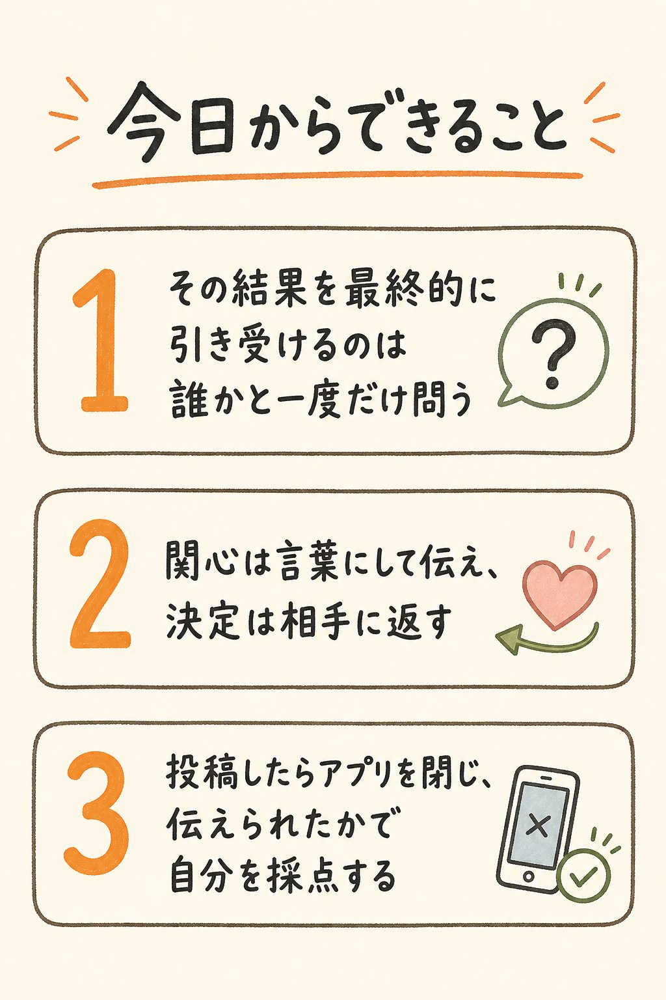
<!-- [INLINE_IMAGE: pattern=list-vertical; title=今日からできること; items=1 その結果を最終的に引き受けるのは誰かと一度だけ問う, 2 関心は言葉にして伝え、決定は相手に返す, 3 投稿したらアプリを閉じ、伝えられたかで自分を採点する; colors=生成り(#F5F0E6)の背景に温かいオレンジ(#F0913A)の番号; style=手書き風のチェックリスト] -->
1. 迷ったら、一度だけ「これを引き受けるのは誰か」と問う
今日いちばん気が重かった出来事をひとつ思い出し、その結果を最終的に引き受けるのが自分か相手かを、心の中で言葉にしてみてください。
答えを出すことより、問いを持つことが目的です。
2. 関心は言葉にし、決定は相手に返す
家族や同僚に対して、「心配している」「気にかけている」は口に出して伝えます。
そのうえで、「どうするかはあなたが決めていいよ」と続けます。
この二つをセットで言えたとき、線は壁ではなく、橋になります。
3. SNSは、投稿したら閉じる
今日から一週間、投稿したあとにアプリを閉じてみてください。
反応を確認するのは、翌日に一度だけ。
数字ではなく、書きたかったことを書けたかどうかで、その投稿の合格を自分で決めます。
みなとは、母に一本の電話をかけました。
用件はありません。
ただ、声を聞いて、近所の話をして、切りました。
何も解決していません。
それでも、切ったあとの部屋は、前より少しだけ静かではありませんでした。
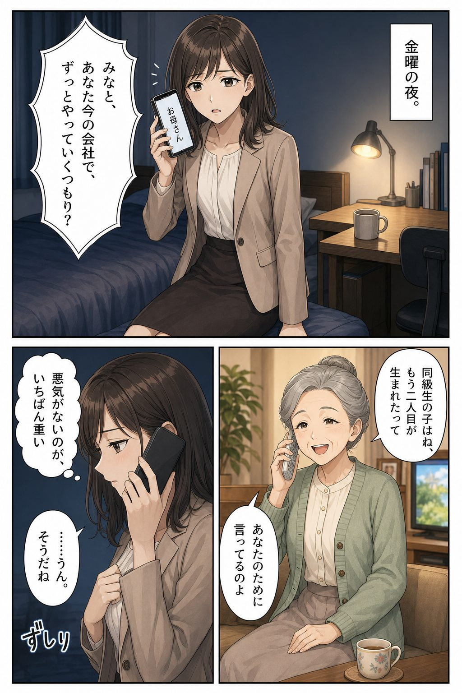
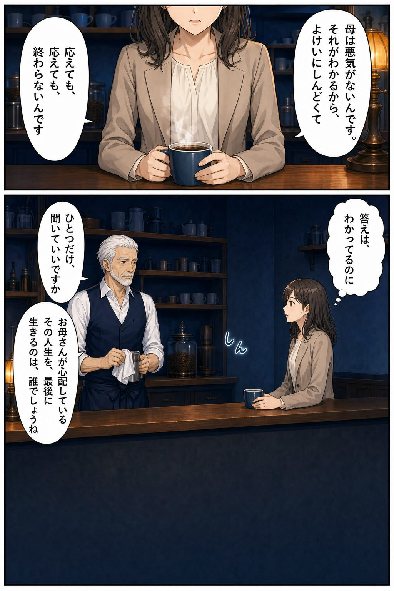
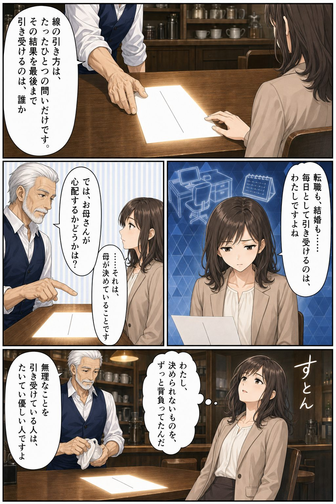
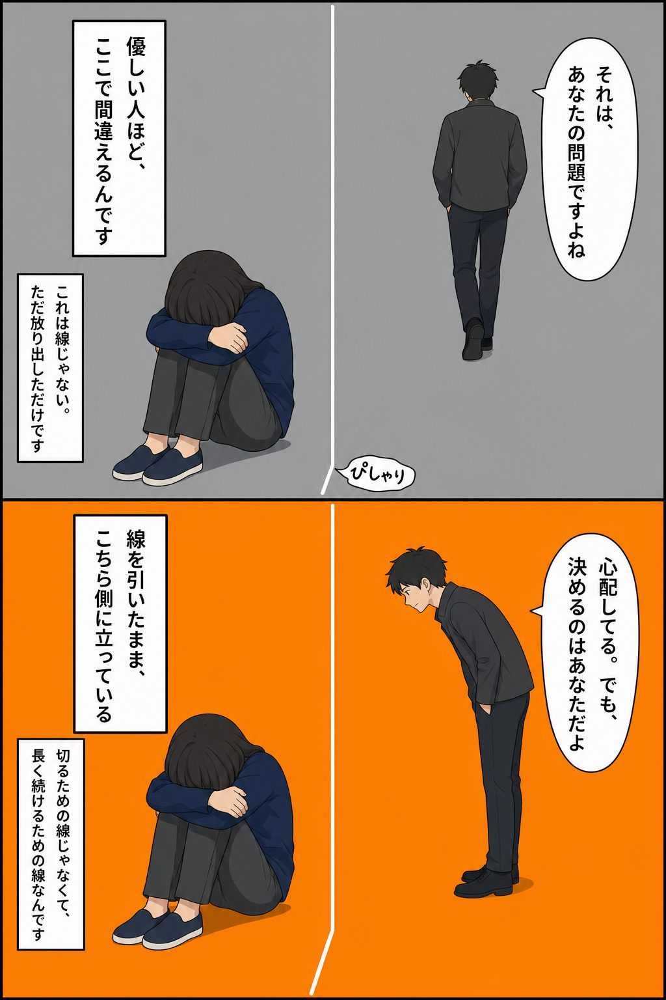
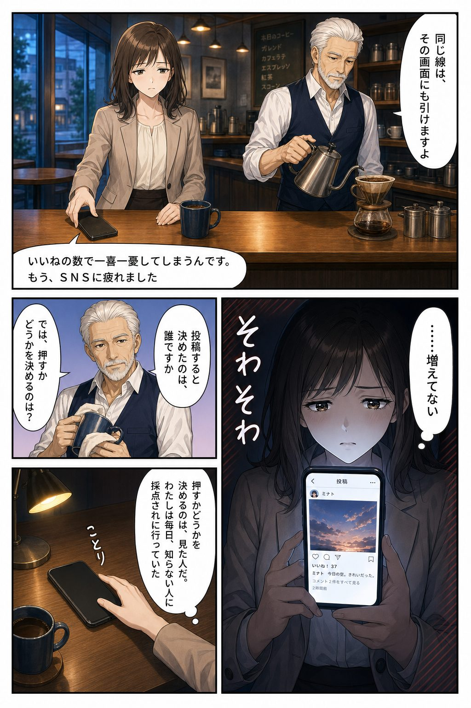
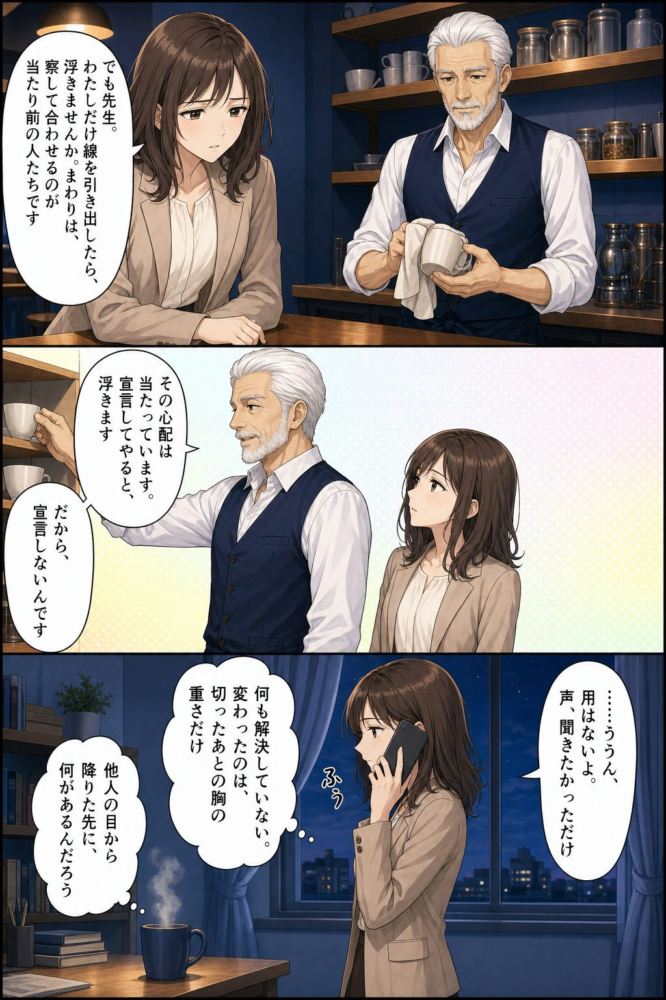
06第5章 貢献していると感じられるとき、人は幸福になる
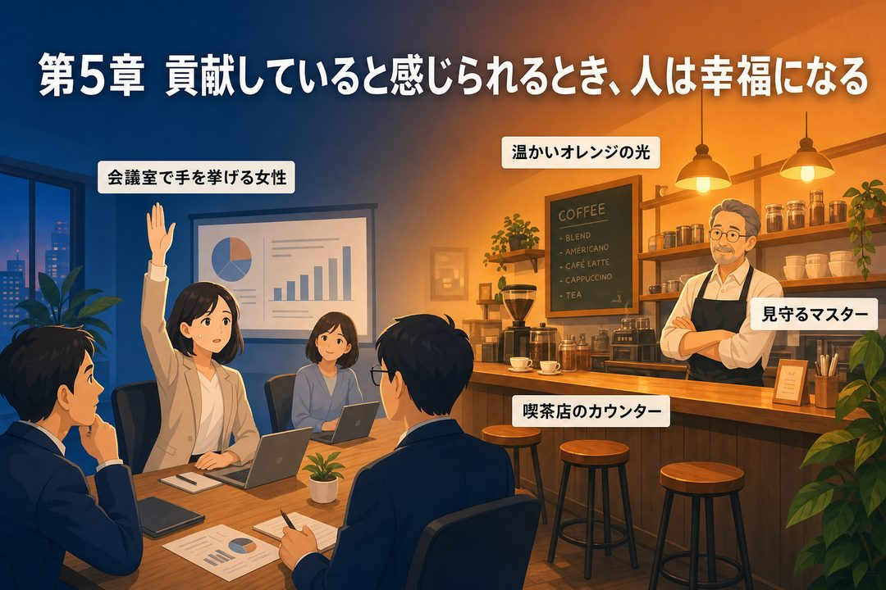
<!-- [HEADER_IMAGE: pattern=illustration | title=第5章 貢献していると感じられるとき、人は幸福になる | elements=会議室で手を挙げる女性,喫茶店のカウンター,温かいオレンジの光,見守るマスター | description=第1章と同じ会議室を、今度は暖色の光で描く。
主人公はまだ緊張しているが、確かに手を挙げている。
背景は深い青から温かいオレンジへ移る色設計] -->
ここまで、みなとさんは「悩みの正体」「性格は変えられるということ」「劣等感の扱い方」「他人の期待から降りる方法」を順に見てきました。
けれど、まだ最後の問いが残っています。
他人の目から降りたあと、私たちは何を目印にして生きればいいのでしょうか。
この章はその答えです。
そして、第1章であの人が飲み込んだ言葉の、続きでもあります。
5-1 みなとが会議で意見を言った日
木曜日の企画会議。
第1章と同じ会議室で、同じように資料が配られ、同じように部長が「じゃあ、この方向で進めるということで。
何かある人？」と言いました。
一字一句、あの日と同じ言葉です。
みなとさんの手元のメモには、三行だけ書いてありました。
前の晩に書いて、朝の電車でもう一度読み返した三行です。
心臓が鳴っていました。
喉が乾いて、指先が冷たくなって、いつもの声が頭の中で始まりました。
「今さら言っても場が止まるだけ」「雰囲気を壊しそう」。
それでもみなとさんは、机の上に置いた手を、五センチだけ持ち上げました。
「……あの、いいですか」
声は震えていました。
語尾も少し上ずりました。
話しているあいだ、自分が何を言っているのか半分わからなくなって、途中で一度、言葉が止まりました。
部長は資料から顔を上げて、「うん、それで？」と言いました。
拍手も、感嘆も、ありませんでした。
会議は普通に進み、みなとさんの案は「検討事項」の欄に一行だけ書き足されました。
帰り道、みなとさんは喫茶店「灯台」のドアを押しました。
「先生。
私、言えました。……でも、何も起きませんでした」
御堂さんはカップを拭く手を止めずに聞きました。
「何が起きると思っていたの？」
「わかりません。
もっと、こう、変わる気がしていて。
でも部長は『それで？』って言っただけで」
「それで、みなとさんはどう思ったんだろうね」
みなとさんは少し黙って、それから言いました。
「……悔しくは、ないんです。
むしろ、会議室を出るとき、少し息がしやすかった。
あと、廊下で高梨くんが『さっきの意見、僕も同じこと思ってました』って」
「それを聞いたとき、どうだった」
「……この会議に、私、いてもいいんだなと思いました」
御堂さんは布巾を置いて、静かにうなずきました。
「アドラーの考え方では、それをいちばん大事なものだとしています。
むずかしい言葉では共同体感覚と呼びますが、中身は簡単で、自分の居場所があるという感覚のことです」
「居場所……」
「その感覚は三つでできています。
ここにいていいという所属の感覚。
この人たちは敵ではないという信頼の感覚。
そして、自分は誰かの役に立てているという貢献の感覚です」
みなとさんは、会議室で手を上げた瞬間を思い返しました。
あのとき自分を押したのは、勇気でも自信でもありませんでした。
「この案は、たぶんチームの役に立つ」という、それだけの見込みでした。
「先生。
私が言えたのは、強くなったからじゃないですね」
「じゃあ、何からだろう」
「役に立てるかもしれない、と思えたからです。
自分がどう見られるかより先に、そっちが来た」
「そう」と御堂さんは言いました。
「他人の目から降りるというのは、何もない空中に降りることではありません。
貢献という別の足場に降りることです。
足場がないまま目線だけ下ろすと、人はただ不安になる」
5-2 褒めるのでもなく、叱るのでもなく
<!-- [INLINE_IMAGE: pattern=comparison-table | title=褒めると勇気づけの違い | elements=褒める：上から下への評価,結果を採点する,評価者の目を気にする人が育つ,勇気づけ：横からの声かけ,取り組みに共感する,自分で決められる人が育つ | description=左右2カードの比較。
左は上下に並んだ人の矢印、右は横並びの人の矢印。
左は青灰色、右は温かいオレンジ] -->
翌週、みなとさんは高梨さんの資料を見て、思わず言いかけました。
「高梨くん、この資料よくできてるね。
えらい」
言った瞬間、自分の言葉に小さな違和感が残ったといいます。
夜、灯台でその話をすると、御堂さんはこう聞きました。
「その『えらい』は、誰が誰に言う言葉だろうね」
「……上の人が、下の人に、ですね」
「褒めるという行為には、評価する側とされる側という上下がどうしても入ります。
上手にできたから丸をあげる。
それは採点です。
採点され続けた人はどうなると思う？」
みなとさんはすぐに気づきました。
「……丸をもらうために動くようになります。
私だ」
「そう。
アドラー心理学では、褒め言葉だけが行動の基準になると、相手が採点者の顔色をうかがう関係になりやすいと考えます。
よかれと思って丸をつけているうちに、丸をもらうことが目的になってしまう。
他人の目から降りるどころか、いちばん深いところに戻ってしまうわけです」
「じゃあ、叱ればいいわけでもないですよね」
「叱るのも同じ構図です。
上から下へ、評価が降りていく。
方向が違うだけで、置いている場所は同じ」
アドラー心理学が代わりに置くのが勇気づけです。
上からでも下からでもなく、横から声をかける。
相手を採点するのではなく、相手が取り組んでいることに関心を向ける。
御堂さんは具体的な言い換えを挙げました。
「えらい」ではなく「助かった」。
「よくできました」ではなく「この部分、私はいいと思った」。
「頑張ったね」ではなく「大変だったでしょう」。
「ありがとう、という言葉は評価ではありません。
あなたのおかげで私が助かったという事実の報告です。
事実の報告に上下はない」
ここでみなとさんは、少し意地悪な質問をしました。
「先生、それって結局、言い方のコツですよね。
テクニック」
御堂さんは首を横に振りました。
「そこがいちばん誤解されるところです。
勇気づけは話し方の技術ではありません。
相手を対等な仲間として見ているかどうかという立ち位置の話です」
「立ち位置……」
「たとえば、心の中で『この子はまだ半人前だ』と思っている人が、口だけ『助かったよ』と言ってごらんなさい。
相手には必ず伝わります。
人は言葉より、その裏の目線を受け取るものだから」
だから勇気づけは、フレーズ集を覚えて明日から使うようなものではありません。
相手を「指導すべき下の人」から「一緒にこの仕事をしている人」に見直すこと。
言葉が変わるのは、その結果にすぎないのです。
「そしてもうひとつ」と御堂さんは付け加えました。
「勇気づけは、自分にも使えます。
今日一日で、誰かの役に立った小さなことを一つ思い出す。
それだけで人は少し立て直せる」
5-3 特別になろうとしなくていい
<!-- [INLINE_IMAGE: pattern=concentric | title=特別でなくても居場所はある | elements=いちばん内側：ありのままの自分,二つ目：家族と友人,三つ目：職場やチーム,いちばん外側：社会 | description=四重の同心円。
中心は温かいオレンジの円で人が一人立っている。
外へ行くほど淡い青。
中心の円に注釈テキストとして「ここにいるだけで所属している」] -->
数日後、みなとさんは暗い顔で灯台に来ました。
スマートフォンには同期の昇進の投稿が並んでいたそうです。
「会議で一回言えたくらいで、何も変わっていません。
私は結局、何者にもなれていない」
御堂さんは静かに聞きました。
「何者かになれたら、何が手に入ると思っているの？」
「……安心、でしょうか。
誰にも文句を言われない場所」
「そこがね、大事なところです」と御堂さんは言いました。
「私たちはよく、特別によくなろうとします。
人より成果を出して、人より認められて、そうすれば自分の居場所が確保できると考える」
「はい。
ずっとそう思ってきました」
「けれど、それがうまくいかないとき、人はもう一方に向かうことがあります。
特別に悪くなろうとするのです」
みなとさんは首をかしげました。
「できない自分を強調する。
体調が悪いと言い続ける。
わざと仕事を放り出す。
問題を起こす人になる。
これも実は、注目を集めるという意味では同じ働きをしています。
特別によくなるのも、特別に悪くなるのも、根は『私を見てほしい』という同じ一本です」
「じゃあ、どうすれば」
「どちらも降りていいのです。
普通でいる勇気を持つ、という言い方をします」
みなとさんは反発しました。
「普通って、負けみたいに聞こえます」
「そこがいちばんの誤解です」と御堂さんは言いました。
「普通であることは、無能であることとは違います。
普通というのは、特別であることで自分の価値を証明しなくてよくなった状態のことです」
世の中の多くの本は、成功して特別な存在になる方法を教えます。
効率よく成果を出し、抜きん出て、認められる。
それはそれで役に立つ知恵です。
けれどアドラーの考え方は、そこから明確に外れます。
競争のはしごを速く登る方法ではなく、はしごから降りても居場所は消えないと知ることを目指すからです。
「みなとさんは、会社に貢献しているから会社にいていい、と思っていませんか」
「……思っています」
「順番が逆です。
人はまずどこかに所属していて、その中で貢献ができる。
所属は貢献の報酬ではありません。
アドラー心理学では、成果を所属の資格にしない関係を目指します」
御堂さんは、そこで少し声のトーンを落としました。
「ただし、ここには前提があります。
今いる場所が、安全であることです。
もし実際に排除されていたり、そこにいることで危険な目に遭っているなら、話はまったく別です。
そのときは所属について考えるより先に、まず自分の安全を確保すること、そして必要なら、別の居場所を探すことを優先してください」
みなとさんは同心円を思い浮かべました。
いちばん内側にいる自分。
その外に家族と友人。
その外に職場。
さらに外に社会。
どの円でも、みなとさんは審査を受けてから入場したわけではありませんでした。
「特別にならなくても、いていい」と、みなとさんは声に出してみました。
慣れない言葉が、少しだけ体に入りました。
5-4 貢献は、他人に評価されなくても成立する
<!-- [INLINE_IMAGE: pattern=radial | title=貢献感はどこから生まれるか | elements=中心：自分は役に立てたという感覚,誰かの手間を減らした,話を最後まで聞いた,場を保った,伝えたいことを伝えた,見えないところを整えた | description=中心の円から六方向に伸びる放射図。
中心はオレンジ、周囲は淡い青のカード。
外側に「いいねの数」は含めない] -->
最後に、みなとさんは本書でいちばん長く抱えてきた問いを口にしました。
「先生。
役に立てたと思えたら幸せ、というのはわかりました。
でも、それを誰も見ていなかったら？ 誰も評価してくれなかったら、意味はないんじゃないですか」
御堂さんは、いい質問だ、という顔をしました。
「みなとさん。
あの会議のあと、部長は褒めてくれましたか」
「いいえ。
『それで？』だけでした」
「では、あのとき息がしやすくなったのは、誰の評価によるものだったのでしょう」
みなとさんは黙りました。
あの感覚は、誰かに認められて生まれたものではありませんでした。
自分が、自分の口で、伝えたいことを伝えられた。
それだけで起きたことでした。
「アドラーの考え方では、幸福とは貢献しているという感覚のことだとされます。
ここで大事なのは、それが感覚だという点です。
他人の採点表ではなく、自分の内側で成立する」
「……それって、ただの自己満足では」
「自己満足と何が違うと思う？」と御堂さんは問い返しました。
みなとさんは考えて、こう答えました。
「相手のことを一切考えていなかったら、それはただの押しつけです。
相手が迷惑がっているのに『貢献した』と言い張るのは、違う気がします」
「そのとおりです。
だから線はここに引きます。
相手の役に立とうとしたかどうかは自分の課題。
それをどう受け取るかは相手の課題です。
私たちが手にできるのは前半だけで、後半は最初から手の届かないところにある」
これは、第4章で見た課題の分離の、最後の使い道です。
SNSで疲れてしまう人の多くは、貢献の実感を「いいね」の数という他人の採点に預けてしまっています。
預けてしまうと、自分の価値が毎日上下する他人の気分に連動しやすくなります。
だから基準を手元に戻します。
いいねがいくつ付いたかではなく、伝えたいことを伝えられたかを成功の基準にする。
これはリサーチでも、SNS疲れから抜けた人が共通して語っていた転換点でした。
職場でも同じです。
誰にも気づかれない確認作業、机の下で拾った資料、後輩の話を最後まで聞いた十分間。
それらは評価表に載りません。
けれど、載らないから存在しないわけではないのです。
「みなとさん。
今日一日で、誰かの手間を少しでも減らしたことはありましたか」
みなとさんは少し考えて、「後輩の資料の誤字を、黙って直しました」と言いました。
「それは誰かに褒められましたか」
「いいえ」
「では、その貢献は無かったことになりますか」
「……なりません」
「それが答えです」と御堂さんは言いました。
「他人の目が気にならなくなるというのは、他人がどうでもよくなることではありません。
他人の評価がなくても、自分の貢献を自分で数えられるようになることです」
ただし、と御堂さんは付け加えました。
これは万能の呪文ではありません。
心も体も限界のときに「貢献を数えなさい」と言われても、数える力そのものが残っていないことがあります。
そういうときは、まず休む。
そして必要なら専門家の手を借りる。
この考え方は、立ち上がれる人が立ち上がるための杖であって、骨折の治療ではないのです。
第5章 今日からできること
<!-- [INLINE_IMAGE: pattern=list-vertical | title=第5章 今日からできること | elements=1 えらいを助かったに言い換える,2 寝る前に誰かの役に立った小さなことを一つ書く,3 いいねの数ではなく伝えられたかで判定する | description=縦3項目のチェックリスト。
チェックボックス付き。
オレンジのアクセント、生成りの背景] -->
1. 「えらい」を「助かった」に言い換えてみる
今日、誰かの仕事にひとこと言う場面があったら、採点の言葉を事実の言葉に変えてみてください。
「よくできてるね」ではなく「この部分、私は助かった」。
たった一語ですが、相手との立ち位置が横に並びます。
2. 寝る前に、誰かの役に立った小さなことを一つ書く
手帳でもスマートフォンのメモでも構いません。
「後輩の質問に答えた」「資料の誤字を直した」程度で十分です。
誰にも褒められなかったことほど価値があります。
貢献は数えなければ見えないだけで、無かったわけではありません。
3. 発信の成功基準を、自分の側に置き直す
SNSに何かを投稿したら、反応の数を見る前に一度だけ自分に聞いてください。
「私は、伝えたかったことを伝えられたか」。
答えがはいなら、その投稿はもう成功しています。
あとは相手の課題です。
07おわりに
<!-- [INLINE_IMAGE: pattern=before-after | title=劇的でなくていい | elements=前：言いたいことを全部飲み込んだ,今：三回に一回だけ言える,前：いいねの数で一日が決まった,今：決まる日もあるが引きずらない | description=左右2枚の対比イラスト。
左は青灰色の会議室でうつむく女性、右は同じ会議室で少しだけ手を上げる女性。
差は小さく描く。
劇的な変身に見せない] -->
季節がひとつ変わったころのみなとさんは、まだ会議室でどきどきしています。
言えない日もあります。
手を上げようとして、やっぱりやめて、帰り道に自己嫌悪になる日もあります。
SNSを閉じると決めたのに、寝る前にまた開いて、同期の投稿を見て少し沈む夜もあります。
三回に一回、言える。
それくらいです。
けれど、以前と決定的に違うことがひとつあります。
言えなかった日に、「やっぱり私はだめだ」と自分を採点しなくなったことです。
かわりにこう考えるようになりました。
今日は言えなかった。
じゃあ、今日の私は何の役には立てただろう。
この本を、劇的な変化の物語にしなかったのは意図的です。
一冊読んで人格が入れ替わることはありません。
もしそう書いてある本があれば、それは読者を励ましているのではなく、急がせているだけです。
アドラーの考え方は、心の中に一本の新しい線を引く作業です。
ここまでが自分の課題で、ここから先は相手の課題。
ここは変えられなくて、ここは今から決められる。
線を引いても景色は同じで、明日も同じ会議室に行きます。
変わるのは、その景色の中での自分の立ち位置です。
そして線は、何度でも消えます。
疲れているとき、責められたとき、うまくいかないときに、私たちはまた他人の目のほうへ戻ります。
それでいいのです。
戻ってきたことは、失敗ではありません。
線は引き直せるものだから、何度でも引き直せばいい。
この本も、そのために何度でも戻ってきてもらうつもりで書きました。
最後に、この本が答えられないことを正直に書いておきます。
深い傷を負っているとき、環境そのものが壊れているとき、心や体が限界のとき。
この考え方は、その痛みを取り除いてはくれません。
「あなたが選んでいるのだ」という言葉は、そういうときには刃物になります。
そういう場面で必要なのは考え方の転換ではなく、休息と、専門家の手と、あなたを守ってくれる誰かです。
どうかそちらを先にしてください。
そのうえで、日常の中でだけ、この本を使ってください。
会議で言えなかった帰り道に。
母の電話を切ったあとに。
人の投稿を見て胸がざらついた夜に。
そんなときに思い出してほしいことは、たったひとつです。
あなたの価値は、誰かの採点で決まるものではありません。
今日あなたが誰かの手間をほんの少し減らしたなら、それが誰にも見られていなくても、あなたはもう十分に貢献しています。
他人の目から降りた先にあるのは、孤独ではなく、居場所です。
みなとさんは今日も、震える声で三行を読み上げます。
あなたのペースで大丈夫です。
今日は言えなくても、また明日、ここから始めればいいのですから。
© 竹谷知悦 / 特別プレゼント版